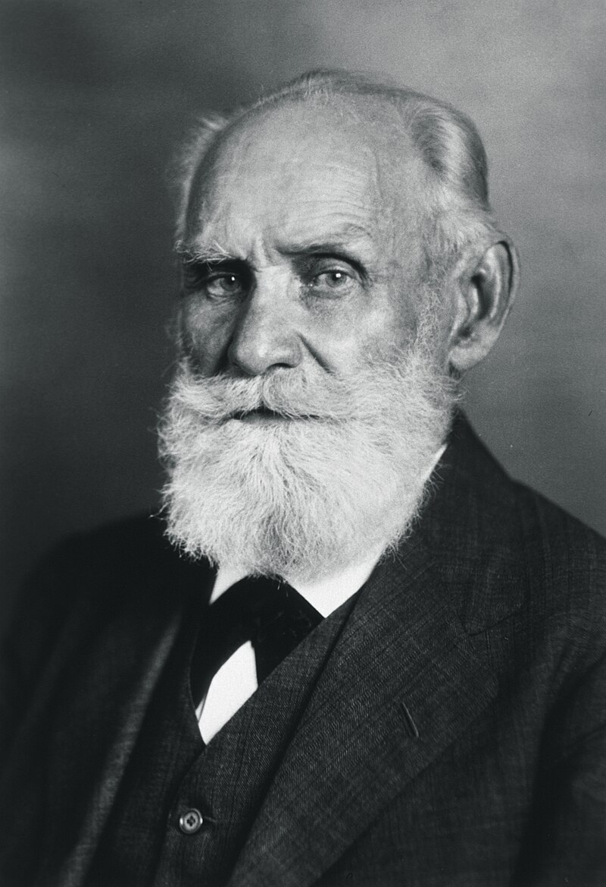
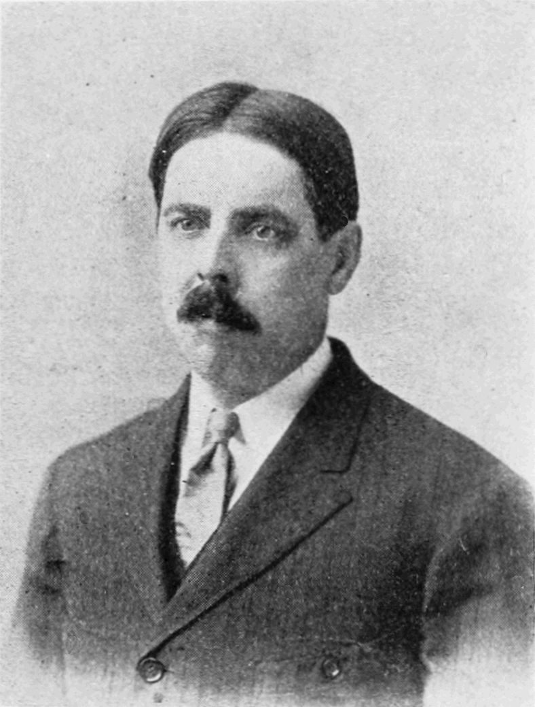
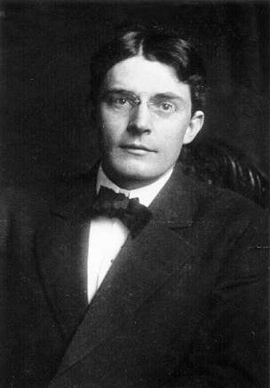
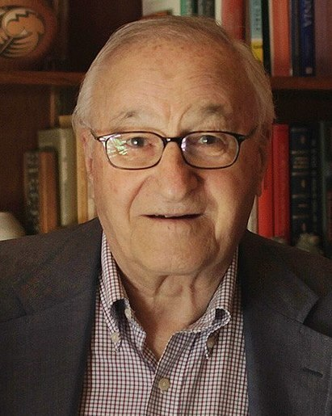
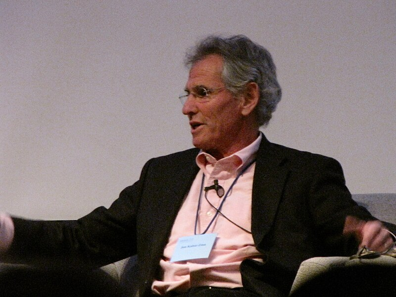

Aprender
a cambiar
Cómo nació la terapia cognitivo-conductual, por qué cada etapa corrigió a la anterior y, sobre todo, qué pasa adentro del consultorio: qué hace el terapeuta, qué hace el paciente, qué se considera mejorar y por qué funcionaría.
Material educativo. Este sitio explica cómo se piensan y se aplican estas terapias; no es un tratamiento ni reemplaza la consulta con un profesional. Si estás pasando un mal momento, al final hay una sección sobre cómo buscar ayuda.

Cómo está armado
El recorrido es cronológico y lógico a la vez: primero las teorías del aprendizaje que nacieron en el laboratorio, después las tres grandes etapas de la terapia —la conductual, la cognitiva y la contextual— y al final una mirada de conjunto. Cada bloque sigue la misma secuencia: dónde estamos, el problema que el autor quería resolver, el desarrollo en pasos con un diagrama que se arma con el scroll, el caso, las palabras de los autores, los errores frecuentes y una pregunta para ponerte a prueba.
Arriba, la regla de tiempo marca el año del bloque que estás leyendo. Las tres franjas de color son las tres «olas»; se superponen a propósito, porque ninguna etapa reemplazó del todo a la anterior.
Desde Wolpe en adelante, cada modelo de terapia tiene una ficha del modelo con las mismas seis preguntas, para que puedas compararlos: qué mantiene el malestar · qué es mejorar · por qué funcionaría · qué se hace en sesión · un caso · qué dice la evidencia.
Qué es la TCC hoy
«Terapia cognitivo-conductual» (TCC; en inglés, cognitive behavioral therapy, CBT) no nombra una técnica sino una familia de tratamientos psicológicos. La asociación estadounidense que reúne a sus practicantes, la ABCT, la define así: un término para un grupo de tratamientos basados en la investigación. Hayes y Hofmann (2017) la describen como la familia de intervenciones con el apoyo empírico más extenso, y agregan que no es monolítica: atravesó varias etapas.
Aun con sus diferencias, las terapias de esta familia comparten algunos rasgos que vas a ver repetirse en todo el recorrido:
El presente
Trabajan sobre problemas actuales y sobre lo que los mantiene hoy, más que sobre su origen remoto.
Metas y estructura
Objetivos acordados, sesiones con un orden, duración a menudo breve (el NHS británico habla de entre 5 y 15 sesiones según el problema).
Colaboración
Paciente y terapeuta trabajan como un equipo; el paciente es el experto en su propia vida.
Práctica entre sesiones
Lo que se aprende en el consultorio se ensaya afuera: registros, exposiciones, experimentos, actividades.
Medir
Un compromiso con evaluar los resultados: en cada caso, con escalas y registros; en la investigación, con ensayos controlados.
Las «tres olas»
Es común contar esta historia en tres olas: la conductual (desde los cincuenta), la cognitiva (desde los sesenta) y la contextual o de aceptación (desde los noventa). La metáfora la propuso Steven Hayes en 2004, y es útil para ordenar. Pero es una periodización discutida: la propuso el creador de una de las terapias de la tercera ola, sugiere reemplazos donde hubo integración, y algunos autores que agrupa no se reconocían en ella. En 2017, Hayes y Hofmann admitieron que la idea había generado «una controversia significativa» y la reformularon: las olas que llegan a la costa incluyen a las anteriores, pero dejan una costa cambiada.
1 · El laboratorio
De fines del siglo XIX a mediados del XX: Pávlov, Thorndike, Watson, Mary Cover Jones y Skinner estudian cómo se aprende. Todavía no hay terapia, salvo el experimento de Jones con Peter.
2 · Primera ola · conductual
Desde los cincuenta, la terapia de conducta aplica esos principios a la clínica: desensibilización sistemática, exposición, manejo de contingencias, modelado.
3 · Segunda ola · cognitiva
Ellis (1955) y Beck (1963) ponen el foco en los pensamientos y creencias. A fines de los setenta lo cognitivo y lo conductual se funden en la «TCC». En los ochenta aparecen modelos específicos para cada trastorno.
4 · Tercera ola · contextual
Desde los noventa: DBT, ACT, MBCT, activación conductual. El foco pasa de cambiar el contenido de los pensamientos a cambiar la relación con ellos y su función. En 2004 Hayes le pone nombre; desde 2017 él mismo y Hofmann proponen ir más allá, hacia los procesos.
5 · Se superponen
Fijate en el dibujo: ninguna franja termina cuando empieza la siguiente. La exposición de los sesenta sigue en uso, la terapia cognitiva sigue en las guías y la tercera ola toma técnicas de las dos. Usá las olas como mapa, no como sucesión de reemplazos.
La idea de que había llegado una «tercera ola» de la TCC generó una controversia significativa. […] Las olas que llegan a la costa asimilan e incluyen a las anteriores, pero dejan una costa cambiada.
«The idea that a "third wave" of CBT had arrived led to significant controversy. […] Waves hitting a shore assimilate and include previous waves – but they leave behind a changed shore.»
Hayes y Hofmann (2017), World Psychiatry, 16, 245-246 · trad. propia ⚑
Fuentes de la introducción
- ABCT, «What is cognitive behavioral therapy?». abct.org
- Hayes, S. C. y Hofmann, S. G. (2017). The third wave of cognitive behavioral therapy and the rise of process-based care. World Psychiatry, 16, 245-246. PubMed 28941087 · PDF
- NHS, «Cognitive behavioural therapy (CBT)». nhs.uk
- Beck Institute, «Understanding CBT». beckinstitute.org
- Hofmann, S. G. y Asmundson, G. J. (2008). PDF (incluye la posición de Linehan y Wells sobre la etiqueta).
- Rachman, S. (2015). The evolution of behaviour therapy and cognitive behaviour therapy. Behaviour Research and Therapy, 64, 1-8. PubMed 25462876
El laboratorio
Perros que salivan ante un metrónomo, gatos que aprenden a escapar de una caja, un bebé al que se le enseña a temer a una rata, un nene al que se le quita el miedo a un conejo, palomas que picotean por comida. Nada de esto es todavía psicoterapia: son teorías del aprendizaje. Pero cada concepto va a decantar, décadas después, en una técnica clínica.
De Pávlov a SkinnerIván Pávlov: un reflejo que se aprende
Dónde estamos
Pávlov es fisiólogo, no psicólogo. En 1904 recibe el Nobel de Medicina por sus trabajos sobre la fisiología de la digestión, no por el condicionamiento. Mientras medía la salivación de perros con una fístula (contando gotas), aparecía algo incómodo para un fisiólogo: los perros salivaban antes de recibir la comida, ante señales que la anunciaban. Esas secreciones «psíquicas» se vuelven su programa de investigación. Su síntesis en inglés, Conditioned Reflexes (traducción de G. V. Anrep), es de 1927.
El problema
¿Cómo puede un estímulo neutro llegar a producir una respuesta corporal?
Un metrónomo no tiene nada que ver con la comida. Sin embargo, después de cierta historia, el perro saliva al oírlo. Pávlov quiere describir con precisión fisiológica cómo se forma, se borra y se generaliza esa conexión.
1 · Antes
La comida en la boca produce salivación sin aprendizaje previo: es un estímulo incondicionado (EI) que provoca una respuesta incondicionada (RI). El metrónomo, en cambio, sólo produce una reacción de orientación: el perro levanta las orejas, pero no saliva.
2 · Durante
Se presenta el metrónomo y, poco después, la comida. Muchas veces. El orden importa: el metrónomo funciona como señal de que viene la comida.
3 · Después
Ahora el metrónomo solo produce salivación. Se volvió un estímulo condicionado (EC) que provoca una respuesta condicionada (RC). Pávlov da cifras: con el metrónomo, la secreción comienza a los 9 segundos y en 45 segundos caen once gotas.
4 · Generalización y discriminación
Si se condicionó un tono de 1000 vibraciones, otros tonos también producen salivación, tanto menos cuanto más se alejan del original: es la generalización. Si un tono parecido se presenta siempre sin comida, el perro aprende a distinguirlo: es la discriminación (Pávlov la llama inhibición diferencial).
5 · Adquisición
Con cada emparejamiento, la respuesta condicionada crece hasta estabilizarse.
6 · Extinción
Si el metrónomo suena una y otra vez sin comida, la salivación se debilita de forma progresiva. Pávlov la llama extinción. Y la clasifica como una forma de inhibición interna: algo nuevo se aprende encima, no se borra lo anterior.
7 · Recuperación espontánea
La prueba de que no se borró: tras un tiempo sin entrenamiento, el reflejo extinguido vuelve. Pávlov lo dice sin vueltas: los reflejos bien establecidos regresan espontáneamente, tarde o temprano, a toda su fuerza.
8 · Una pista para la clínica
Esta curva va a importar muchísimo. Si el miedo se «extingue» sin borrarse, puede volver: con el tiempo, en otro contexto, ante un susto. Medio siglo después, eso va a explicar por qué hay recaídas después de una exposición que salió bien.
He llamado a este nuevo grupo de reflejos «reflejos condicionados» para distinguirlos de los innatos o incondicionados. […] Comparados con los reflejos innatos, estos nuevos reflejos dependen de muchísimas condiciones, tanto para formarse como para mantener su actividad fisiológica.
«I have termed this new group of reflexes conditioned reflexes to distinguish them from the inborn or unconditioned reflexes. […] compared with the inborn reflexes, these new reflexes actually do depend on very many conditions, both in their formation and in the maintenance of their physiological activity.»
Pávlov, Conditioned Reflexes (1927, trad. Anrep), lección II · trad. propia ⚑El término ruso, uslovnyi, se traduce con más exactitud como «condicional».
Librados a sí mismos, los reflejos condicionados extinguidos recuperan espontáneamente toda su fuerza tras un intervalo más o menos largo.
«Left to themselves extinguished conditioned reflexes spontaneously recover their full strength after a longer or shorter interval of time.»
Pávlov (1927), lección IV · trad. propia ⚑
Errores frecuentes
- «A Pávlov le dieron el Nobel por el perro y la campana». El Nobel de 1904 fue por la fisiología de la digestión. Y en sus protocolos predominan metrónomos, zumbadores, tonos y luces; la campana es más folclore que dato.
- «La extinción borra lo aprendido». Pávlov ya la consideró una inhibición y documentó la recuperación espontánea.
- «En el condicionamiento clásico el animal aprende a hacer algo para conseguir comida». No: la respuesta es provocada por el estímulo; la comida llega haga lo que haga. Eso es lo que lo distingue del condicionamiento operante.
Una persona tuvo un ataque de pánico en un ascensor y desde entonces siente ansiedad apenas ve uno. Describí la situación con los términos de Pávlov y explicá qué predice la recuperación espontánea.
Fuentes de este bloque
- The Nobel Prize, «Ivan Pavlov – Facts». nobelprize.org
- Pavlov, I. P. (1927). Conditioned Reflexes (trad. G. V. Anrep), lecciones II, IV, VII y XVII. Classics in the History of Psychology
- Todes, D. P. (1997). From the machine to the ghost within: Pavlov's transition from digestive physiology to conditional reflexes. American Psychologist, 52(9), 947-955. doi
- Wuensch, K. «The proper translation of Uslovnye». core.ecu.edu
- Shenger-Krestovnikova (1921), referencia: Springer
- Mineka, S. y Kihlstrom, J. F. (1978). Unpredictable and uncontrollable events: A new perspective on experimental neurosis. Journal of Abnormal Psychology, 87(2). PDF
- Vervliet, B., Craske, M. G. y Hermans, D. (2013). Fear extinction and relapse: State of the art. Annual Review of Clinical Psychology, 9, 215-248. doi
Edward Thorndike: lo que deja satisfacción, se graba
Dónde estamos

1898, Universidad de Columbia. Casi al mismo tiempo que Pávlov, Thorndike presenta su tesis Animal Intelligence. Pone gatos con hambre en cajas problema: jaulas que se abren con un acto simple (tirar de un lazo, apretar una palanca), con comida a la vista afuera. Registra cuánto tarda cada animal en salir, ensayo tras ensayo.
El problema
¿Los animales razonan, o aprenden de otra manera?
La psicología animal de la época estaba llena de anécdotas sobre animales «inteligentes». Thorndike quiere medir. Si el gato «entiende» cómo funciona la caja, el tiempo debería caer de golpe. Si no, debería bajar de a poco.
1 · La caja problema
El gato prueba de todo: araña los barrotes, mete la pata, maúlla. En algún momento, por azar, tira del lazo y la puerta se abre. Come.
2 · La curva del tiempo
Thorndike grafica el tiempo de escape en cada ensayo (él la llama time-curve). La curva baja de a poco y con altibajos, no de golpe. Su conclusión: no hay comprensión súbita sino ensayo y error.
3 · La ley del efecto
Los impulsos que no llevan a nada se van «borrando»; el que lleva al acto exitoso se va «grabando» por la satisfacción que produce. En 1911 lo formula como ley: de las respuestas a una misma situación, las seguidas de satisfacción se conectan más firmemente con ella; las seguidas de malestar, menos.
De las varias respuestas dadas ante una misma situación, las que van acompañadas o seguidas de cerca por satisfacción para el animal quedarán, en igualdad de condiciones, más firmemente conectadas con la situación, de modo que, cuando esta se repita, tendrán más probabilidad de repetirse.
«Of several responses made to the same situation, those which are accompanied or closely followed by satisfaction to the animal will, other things being equal, be more firmly connected with the situation, so that, when it recurs, they will be more likely to recur…»
Thorndike, Animal Intelligence (1911), cap. V · trad. propia ⚑
Errores frecuentes
- «Thorndike y Skinner dicen lo mismo». Thorndike habla de satisfacción y malestar y de «conexiones» entre situación y respuesta; Skinner evita los estados internos y define el refuerzo por sus efectos.
- «Ensayo y error significa que el animal no aprende nada». Aprende, pero de forma gradual, por selección de respuestas, no por comprensión súbita.
¿Por qué la forma de la curva de Thorndike era un argumento contra la idea de que los gatos «razonaban» la solución?
Fuentes de este bloque
- Thorndike, E. L. (1911). Animal Intelligence, cap. II (tesis de 1898) y cap. V. cap. II · cap. V (Classics in the History of Psychology)
- Retrato: «PSM V80 D211 Edward Lee Thorndike», Popular Science Monthly, vol. 80 (1912). Wikimedia Commons

John B. Watson: el manifiesto y el pequeño Albert
Dónde estamos

En 1913 Watson publica «Psychology as the Behaviorist Views It», el manifiesto del conductismo: la psicología debe estudiar la conducta observable, no la conciencia por introspección. Conoce los trabajos de Pávlov y ve en el reflejo condicionado una herramienta para explicar las emociones humanas. En 1920, con su asistente Rosalie Rayner, publica «Conditioned emotional reactions».
El problema
¿Los miedos se heredan, o se aprenden?
Si un bebé puede aprender a temerle a algo que antes no le daba miedo, muchas fobias adultas podrían ser reacciones condicionadas, y no síntomas de un conflicto oculto, como proponía el psicoanálisis.
1 · Línea de base · ≈9 meses
«Albert B.», hijo de una nodriza del hospital, no muestra miedo ante una rata blanca, un conejo, un perro, un mono, máscaras, algodón. Lo que sí lo asusta es un ruido fuerte: un martillo que golpea una barra de acero detrás de su cabeza.
2 · Condicionamiento · 11 meses
Cuando Albert estira la mano hacia la rata, golpean la barra. Dos emparejamientos un día; una semana después, cinco más. «En total se dieron siete estimulaciones conjuntas». Al final, apenas ve la rata, llora y se aleja gateando.
3 · Generalización · 5 días después
El miedo se extiende a cosas parecidas: un conejo (reacción «pronunciada»), un perro, un abrigo de piel, algodón, una máscara de Papá Noel, el pelo de Watson. Los bloques de madera siguen sin dar miedo: hay discriminación.
4 · Un mes después
El miedo persiste, más débil. En algunas pruebas le fuerzan la mano para que toque los objetos.
5 · Nunca se lo descondicionó
Los autores escriben que Albert dejó el hospital el día de las últimas pruebas y que por eso no pudieron eliminar el miedo. Pero en el mismo artículo dicen que sabían de su partida con un mes de anticipación.
Ética. Se provocó deliberadamente miedo en un bebé, con contacto forzado con los estímulos y sin eliminarlo después; los autores justificaron que podían hacerle «relativamente poco daño». No existían comités de ética ni consentimiento informado en el sentido actual, pero el procedimiento sería hoy inaceptable.
Método. Un solo sujeto, observaciones no ciegas, una respuesta inconsistente que hubo que «refrescar» con emparejamientos extra. Ben Harris (1979) mostró que los manuales deformaron casi todos los detalles del estudio, hasta inventarle a veces un descondicionamiento que nunca existió.
¿Quién era Albert? Beck, Levinson e Irons (2009) lo identificaron con Douglas Merritte, que murió a los seis años de hidrocefalia; Fridlund y colaboradores (2012) sostuvieron que ya tenía daño neurológico. Powell, Digdon, Harris y Smithson (2014) propusieron a William Albert Barger, que vivió hasta 2007. La identidad sigue en discusión; la identificación con Barger es hoy la más aceptada en la literatura histórica, pero el debate no está cerrado.
La psicología, tal como la ve el conductista, es una rama experimental puramente objetiva de la ciencia natural. Su meta teórica es la predicción y el control de la conducta.
«Psychology as the behaviorist views it is a purely objective experimental branch of natural science. Its theoretical goal is the prediction and control of behavior.»
Watson (1913), Psychological Review, 20, 158-177 · trad. propia ⚑
Es probable que muchas de las fobias de la psicopatología sean verdaderas reacciones emocionales condicionadas, de tipo directo o transferido.
«It is probable that many of the phobias in psychopathology are true conditioned emotional reactions either of the direct or the transferred type.»
Watson y Rayner (1920), Journal of Experimental Psychology, 3(1), 1-14 · trad. propia ⚑
Errores frecuentes
- «Watson después le curó el miedo a Albert». Nunca hubo descondicionamiento.
- «Albert quedó con fobia a todo lo peludo de por vida». No se sabe; ni siquiera hay acuerdo sobre su identidad.
- «El experimento demostró que todas las fobias son condicionadas». Con un solo caso y un método débil, mostró que se puede condicionar miedo; no que todas las fobias se originen así.
Identificá en el caso Albert el EI, la RI, el EC y la RC, y señalá dos problemas metodológicos y uno ético.
Fuentes de este bloque
- Watson, J. B. (1913). Psychology as the behaviorist views it. Psychological Review, 20, 158-177. psychclassics
- Watson, J. B. y Rayner, R. (1920). Conditioned emotional reactions. Journal of Experimental Psychology, 3(1), 1-14. psychclassics
- Harris, B. (1979). Whatever happened to Little Albert? American Psychologist, 34(2), 151-160. PDF archivado
- Beck, H. P., Levinson, S. e Irons, G. (2009). Finding Little Albert. American Psychologist, 64(7), 605-614. PDF
- Powell, R. A., Digdon, N., Harris, B. y Smithson, C. (2014). Correcting the record on Watson, Rayner, and Little Albert. American Psychologist, 69(6), 600-611. MacEwan
- Resumen del debate sobre la identidad (Fridlund y otros, 2012; Digdon y otros, 2014): Wikipedia, «Little Albert experiment»
Mary Cover Jones: Peter y el conejo
Dónde estamos
Nueva York, 1924. Mary Cover Jones conoce el trabajo de Watson sobre Albert. Con su asesoramiento y fondos del Laura Spelman Rockefeller Memorial, estudia a 70 chicos de entre 3 meses y 7 años con miedos de origen desconocido, y prueba siete métodos para eliminarlos. Ese mismo año publica dos artículos: «The elimination of children's fears» y «A laboratory study of fear: The case of Peter».
El problema
Si un miedo se puede aprender, ¿se puede desaprender?
Watson había mostrado cómo producir un miedo. Nadie había mostrado cómo eliminarlo. Jones compara métodos: explicarle al chico, dejar de exponerlo, distraerlo, burlarse, y otros.
1 · Peter
Peter tiene 2 años y 10 meses. Le teme a una rata blanca, y el miedo se extiende a un conejo, un abrigo de piel, una pluma, algodón; no a los bloques de madera. Jones dice que parece «casi Albert, un poco más grande». Como el miedo al conejo es el más intenso, trabajan con el conejo.
2 · Una escala de 17 pasos
Jones ordena la tolerancia al conejo en 17 niveles, de la A (el conejo enjaulado en cualquier lugar de la sala le da miedo) a la Q (deja que le mordisquee los dedos). Primer método: imitación social. Peter juega cada día con otros tres chicos, elegidos porque no le temen al conejo.
3 · Una recaída
Peter pasa dos meses internado por escarlatina. Al volver, un perro grande salta sobre él y su enfermera al subir a un taxi. El miedo vuelve al nivel inicial.
4 · Comida y distancia
Segundo método, el «condicionamiento directo»: Peter come algo que le gusta en su silla alta mientras la experimentadora acerca el conejo enjaulado tanto como pueda sin que el miedo interfiera con la comida. Un poco más cerca cada vez.
5 · Resultado
Peter termina con «un genuino cariño por el conejo». El miedo al algodón, al abrigo y a las plumas desaparece por completo; el miedo a las ratas mejora mucho. Ante animales nuevos (un ratón, lombrices) muestra un leve malestar inicial y después los toca. Jones aclara que el estudio está «incompleto»: no hubo seguimiento largo.
Gracias a la presencia del estímulo agradable (la comida) cada vez que se mostraba el conejo, el miedo se fue eliminando gradualmente en favor de una respuesta positiva.
«Through the presence of the pleasant stimulus (food) whenever the rabbit was shown, the fear was eliminated gradually in favor of a positive response.»
Jones (1924), «A laboratory study of fear: The case of Peter», Pedagogical Seminary, 31 · trad. propia ⚑
En 1974, mirando hacia atrás, Jones escribió que ya no se sentiría satisfecha tratando los miedos de un chico de tres años sin seguimiento posterior y sin apreciarlo como una persona compleja.
Paráfrasis de Jones (1974), «Albert, Peter, and John B. Watson», American Psychologist, 29(8), citada por Rutherford (2001) ≈
Errores frecuentes
- «Peter era Albert». Son dos chicos distintos; el miedo de Peter no fue producido en un laboratorio.
- «Jones usó un solo método». Usó dos: imitación social y condicionamiento directo, y la recaída obligó a combinarlos.
- Atribuirle a Jones el término «desensibilización»: es de Wolpe, 34 años después. Fue Wolpe quien, a principios de los setenta, la llamó «madre de la terapia de conducta».
¿Qué elementos del procedimiento con Peter reaparecen en las terapias de exposición posteriores, y qué le faltó al estudio según la propia Jones?
Fuentes de este bloque
- Jones, M. C. (1924). A laboratory study of fear: The case of Peter. Pedagogical Seminary, 31, 308-315. psychclassics
- Jones, M. C. (1924). The elimination of children's fears. Journal of Experimental Psychology, 7(5), 382-390. PDF
- Rutherford, A. (2001). Introducción a «A laboratory study of fear». psychclassics
- Jones, M. C. (1974). Albert, Peter, and John B. Watson. American Psychologist, 29(8), 581-583. doi
B. F. Skinner: la conducta y sus consecuencias
Dónde estamos
En 1935 Skinner distingue dos tipos de condicionamiento; en 1937 bautiza uno de ellos: la conducta operante, que el organismo emite y que controlan sus consecuencias, a diferencia de la respondiente de Pávlov, que un estímulo provoca. En 1938 publica The Behavior of Organisms; en 1953, Science and Human Behavior, donde aplica el análisis a la conducta humana e incluye un capítulo sobre psicoterapia; en 1957, con Charles Ferster, Schedules of Reinforcement.
El problema
¿Cómo explicar la conducta sin recurrir a la mente?
Skinner propone buscar las variables externas de las que la conducta es función: qué la antecede, qué la sigue. Lo llama análisis funcional. No niega que haya pensamientos, pero los trata como conducta, no como su causa.
1 · Antecedente
Una paloma en una cámara experimental. Se enciende una luz. Ese estímulo no provoca nada: marca la ocasión en que una conducta va a tener cierta consecuencia. Es un estímulo discriminativo.
2 · Conducta
La paloma estira el cuello. Es una conducta operante: opera sobre el ambiente.
3 · Consecuencia
Llega comida. La próxima vez que se encienda la luz, estirar el cuello será más probable. Skinner: «describimos la contingencia diciendo que un estímulo es la ocasión en la que una respuesta es seguida de refuerzo; debemos especificar los tres términos». Es la contingencia de tres términos.
4 · Moldear
¿Y si la conducta buscada nunca aparece sola? Se refuerzan aproximaciones sucesivas: primero un leve giro hacia el punto, después un movimiento hacia él, después sólo el picotazo. Skinner lo llamó moldeamiento (shaping) tras un episodio en un molino harinero de Minneapolis en 1943, durante un proyecto con palomas en la guerra.
5 · Refuerzo positivo
Se agrega algo y la conducta aumenta. Un chico ordena su pieza y recibe un elogio que le importa; ordena más seguido.
6 · Refuerzo negativo
Se quita algo aversivo y la conducta aumenta. Tomar un analgésico saca el dolor: tomarlo se vuelve más probable. Skinner es explícito: en los dos casos de refuerzo, la probabilidad de la respuesta aumenta. Refuerzo negativo no es castigo.
7 · Castigo positivo y negativo
Si la conducta disminuye, hay castigo: positivo si se agrega algo aversivo (un reto), negativo si se quita algo deseado (perder el celular por un rato). En 1953 Skinner los describe como presentar un reforzador negativo o retirar uno positivo; los rótulos actuales son posteriores.
8 · Extinción y programas
Si el refuerzo deja de llegar, la conducta se vuelve menos frecuente: extinción operante («si nadie atiende el teléfono, terminamos dejando de llamar»). Y no da lo mismo cómo llega el refuerzo: los programas variables producen conductas muy resistentes a la extinción. Skinner pone el ejemplo de las máquinas tragamonedas.
| Programa | Cuándo llega el refuerzo | Efecto típico | Ejemplo cotidiano |
|---|---|---|---|
| Razón fija | cada N respuestas | tasa muy alta, con una pausa justo después del refuerzo | trabajo a destajo |
| Razón variable | después de un número variable de respuestas | tasa altísima y muy resistente a la extinción | máquinas tragamonedas |
| Intervalo fijo | la primera respuesta tras un tiempo fijo | pocas respuestas al principio, que aumentan al acercarse el momento | mirar el reloj cerca de la salida |
| Intervalo variable | la primera respuesta tras un tiempo variable | tasa estable y uniforme, muy difícil de extinguir | revisar si llegó un mensaje |
En ambos casos el efecto del refuerzo es el mismo: aumenta la probabilidad de la respuesta.
«In both cases the effect of reinforcement is the same — the probability of response is increased.»
Skinner, Science and Human Behavior (1953), sobre reforzadores positivos y negativos · trad. propia ⚑
Si el paciente ha de volver a consulta, el psicoterapeuta debe asegurarse de que la conducta de acudir a él sea reforzada en alguna medida.
«If the patient is to return for further counsel, the psychotherapist must make sure that the behavior of coming to him is in some measure reinforced.»
Skinner (1953), cap. XXIV, «Psychotherapy» · trad. propia ⚑Skinner no propone una técnica terapéutica: analiza la terapia como una relación que también está sujeta a contingencias.
Errores frecuentes
- «Refuerzo negativo = castigo». Todo refuerzo aumenta la conducta; «negativo» significa que se quita algo.
- Confundir clásico y operante: en el clásico la respuesta es provocada por un estímulo previo; en el operante es emitida y la controlan sus consecuencias.
- «Caja de Skinner» es un nombre que le pusieron otros (se atribuye a Clark Hull y sus alumnos); Skinner prefería hablar de cámara experimental.
Un chico hace berrinches en el supermercado y los padres terminan comprándole un chocolate para que se calme. Analizá la escena con la contingencia de tres términos, para el chico y para los padres.
Fuentes de este bloque
- Skinner, B. F. (1935). Two types of conditioned reflex and a pseudo type. psychclassics · (1937). Two types of conditioned reflex: A reply to Konorski and Miller. psychclassics
- Skinner, B. F. (1953). Science and Human Behavior. Macmillan. archive.org
- Ferster, C. B. y Skinner, B. F. (1957). Schedules of Reinforcement. doi
- Peterson, G. B. (2004). A day of great illumination: B. F. Skinner's discovery of shaping. JEAB, 82(3), 317-328. PMC1285014
- «Operant conditioning chamber». Wikipedia
Del laboratorio a la clínica
Ninguno de estos autores propuso una psicoterapia. Pero cada concepto va a reaparecer, a veces décadas después, convertido en técnica. La tabla adelanta ese recorrido; cada fila es una anticipación.
| Concepto de laboratorio | Autor y año | Técnica clínica en la que decanta | Desde |
|---|---|---|---|
| Extinción | Pávlov, 1927 | Exposición; hoy entendida como aprendizaje inhibitorio, no como borrado | 1958-2014 |
| Recuperación espontánea · renovación | Pávlov, 1927 · Bouton, 1979 | Prevención de recaídas: exponer en contextos y momentos variados | 1979-2014 |
| Generalización · discriminación | Pávlov, 1927 | Explicar por qué un miedo se extiende; distinguir señales de peligro y de seguridad | — |
| Contracondicionamiento graduado | Jones, 1924 | Desensibilización sistemática | 1958 |
| Imitación social | Jones, 1924 | Modelado y aprendizaje vicario | años sesenta |
| Refuerzo positivo | Thorndike, 1911 · Skinner, 1938 | Economía de fichas, manejo de contingencias | 1965 |
| Refuerzo negativo | Skinner, 1953 | Teoría bifactorial: la evitación se mantiene por alivio | 1947-1960 |
| Moldeamiento | Skinner, 1943-1953 | Entrenamiento en habilidades por aproximaciones sucesivas | años sesenta |
| Análisis funcional · A-B-C | Skinner, 1953 | Análisis funcional de casos clínicos | 1968 |
| Neurosis experimental | Shenger-Krestovnikova, 1921 | Modelos animales de ansiedad; luego, el papel de lo impredecible e incontrolable | 1978 |
Terapia de conducta
Después de la Segunda Guerra Mundial, un grupo de psicólogos y psiquiatras en Sudáfrica, Inglaterra y Estados Unidos se propone algo nuevo: tratar el malestar con los principios del laboratorio. Si los miedos y las conductas problema se aprenden, se pueden desaprender. Nace la terapia de conducta.
De Eysenck (1952) a Bandura (1977)Hans Eysenck: ¿la psicoterapia funciona?
Dónde estamos
Londres, 1952. El psicólogo Hans Eysenck publica «The effects of psychotherapy: An evaluation». Compara tasas de mejoría de pacientes «neuróticos» tratados con psicoanálisis o con terapias eclécticas contra datos de pacientes que no recibieron psicoterapia sistemática (altas de hospitales estatales, pacientes atendidos por médicos generales). En esos años la psicoterapia dominante, en el mundo anglosajón, es de orientación psicoanalítica.
El problema
Si sin terapia mejora casi la misma proporción de pacientes, ¿qué agrega la terapia?
La provocación de Eysenck no fue sólo un ataque: obligó a todo el campo a comparar con grupos de control. Y le dio un argumento a quienes querían tratamientos derivados de la teoría del aprendizaje, evaluables con el método experimental.
1 · Psicoanálisis: 44 %
Según las fuentes que reunió Eysenck, un 44 % de los pacientes tratados con psicoanálisis mejoraba.
2 · Ecléctica: 64 %
Con tratamientos eclécticos, un 64 %.
3 · Sin psicoterapia: ≈ dos tercios
Y con la línea de base sin psicoterapia, alrededor de dos tercios mejoraban en unos dos años. Conclusión de Eysenck: los datos no prueban que la psicoterapia ayude. Las comparaciones tenían problemas serios (grupos distintos, criterios de mejoría distintos), y décadas de reanálisis lo discutieron.
4 · La respuesta llegó en 1977
Mary Lee Smith y Gene Glass inventaron un método para combinar estudios, el metaanálisis, y lo aplicaron a 375 estudios: el paciente promedio que recibió terapia estaba mejor que el 75 % de los controles no tratados. Con una ironía: casi no encontraron diferencias entre terapias conductuales y no conductuales.
Un nombre que nace tres veces
Ogden Lindsley trabaja con Skinner en el Metropolitan State Hospital; su proyecto con pacientes internados se llama al principio «Studies in Behavior Therapy». La prioridad exacta del término es discutida.
Arnold Lazarus, del grupo de Wolpe en Johannesburgo, usa la expresión en un artículo del South African Medical Journal.
Eysenck publica «Learning theory and behaviour therapy» (1959) y la compilación Behaviour Therapy and the Neuroses (1960). En 1963 funda, con Stanley Rachman, la revista Behaviour Research and Therapy. En 1966 nace en Estados Unidos la asociación que hoy se llama ABCT.
No logran probar que la psicoterapia, freudiana o de otro tipo, facilite la recuperación de los pacientes neuróticos.
«They fail to prove that psychotherapy, Freudian or otherwise, facilitates the recovery of neurotic patients.»
Eysenck (1952), Journal of Consulting Psychology, 16, 319-324 · trad. propia ⚑Fijate en el verbo: los datos «no logran probar» que sirva. No es lo mismo que demostrar que no sirve.
Errores frecuentes
- «Eysenck demostró que la psicoterapia no sirve». Dijo que sus datos no probaban que sirviera, con comparaciones muy cuestionables.
- «La terapia de conducta la inventó una persona». El rótulo aparece casi a la vez en tres países.
¿Por qué el artículo de Eysenck de 1952 fue importante para la terapia de conducta, aunque sus cifras fueran discutibles?
Fuentes de este bloque
- Eysenck, H. J. (1952). The effects of psychotherapy: An evaluation. Journal of Consulting Psychology, 16, 319-324. psychclassics
- Smith, M. L. y Glass, G. V. (1977). Meta-analysis of psychotherapy outcome studies. American Psychologist, 32, 752-760. PDF
- Origen del término «behavior therapy»: Springer, Encyclopedia · Lazarus (1958), PubMed 13580450 · Eysenck (1959), PubMed 13641957
- Association for Behavioral and Cognitive Therapies (historia): Wikipedia
Joseph Wolpe: relajarse frente a lo temido
Dónde estamos
Wolpe es un psiquiatra sudafricano. A fines de los cuarenta, en la Universidad de Witwatersrand, provoca «neurosis experimentales» en gatos con descargas eléctricas en una jaula. Después los alimenta en lugares cada vez más parecidos a esa jaula, hasta que pueden comer en ella: comer funciona como respuesta incompatible con la ansiedad. Publica su principio en 1954 y el libro Psychotherapy by Reciprocal Inhibition en 1958.
El problema
¿Cómo hacer con personas lo que la comida hacía con los gatos?
No se puede alimentar a un paciente mientras recorre sus miedos. Wolpe necesita una respuesta antagónica a la ansiedad que se pueda producir a voluntad en el consultorio, y una forma de presentar los estímulos temidos de a poco.
1 · Inhibición recíproca
El principio: si una respuesta antagónica a la ansiedad ocurre en presencia de los estímulos que la provocan, y la suprime total o parcialmente, el vínculo entre esos estímulos y la ansiedad se debilita. Es la misma lógica de Mary Cover Jones con Peter, formulada como ley general.
2 · La respuesta antagónica: relajación
Wolpe adapta la relajación muscular progresiva de Edmund Jacobson (1929): tensar y soltar grupos musculares hasta lograr un estado de calma profunda. Las primeras sesiones se dedican a enseñarla, con práctica diaria en casa.
3 · La jerarquía
Paciente y terapeuta ordenan las situaciones temidas de menor a mayor. Para puntuarlas, Wolpe propone las unidades subjetivas de malestar (SUDS, formalizadas en 1969): una escala de 0 a 100 (en otras versiones, de 0 a 10).
4 · Imaginar, relajado
Con el paciente relajado, el terapeuta describe el primer ítem y le pide que lo imagine unos segundos. Si aparece ansiedad, el paciente levanta un dedo: se suspende la escena y se vuelve a relajar. Cuando un ítem ya no provoca ansiedad, se pasa al siguiente. Al final, se practica en la vida real.
5 · Lo que mostró la investigación
En los años setenta, estudios de desmantelamiento mostraron que ni la relajación ni la gradualidad eran imprescindibles. Harold Leitenberg (1976) la describió como un método para promover la exposición a los estímulos fóbicos. Hoy se la entiende como una forma de exposición graduada en imaginación.
1Qué mantiene el malestar
La ansiedad neurótica es una respuesta condicionada a estímulos que no son peligrosos. Persiste porque esos estímulos la siguen disparando y nada la contrarresta.
2Qué es mejorar
Que los ítems de la jerarquía ya no provoquen ansiedad y la persona pueda enfrentar la situación real.
3Por qué funcionaría
Propuesta de Wolpe: contracondicionamiento. La relajación, incompatible con la ansiedad, va reemplazando la respuesta ansiosa ítem por ítem.
Investigación La relajación y la gradualidad no resultaron necesarias, y parte del efecto se explicaba por expectativas (Kazdin y Wilcoxon, 1976). Hoy se la entiende como exposición graduada; el mecanismo se describe como extinción o aprendizaje inhibitorio.4Técnicas y sesión
Primero se enseña la relajación (tarea diaria en casa). Después se arma la jerarquía con SUDS. En las sesiones siguientes se presentan pocos ítems por vez, varias veces, durante unos segundos. El terapeuta conduce y describe; el paciente imagina y avisa con un dedo. Al final, práctica en vivo.
5Caso
La jerarquía de miedo a volar es ficticia. Wolpe y su grupo publicaron series de casos clínicos; Lazarus (1958) es uno de los primeros estudios de caso.
6Evidencia y límites
Wolpe informó tasas de mejoría muy altas (se suele citar alrededor del 90 %), pero en series de casos sin grupo control, evaluadas por el propio terapeuta. En el ensayo de Bandura y colaboradores (1969) con fobia a las serpientes, la desensibilización rindió menos que el modelado participante. Hoy la exposición en vivo es la opción de referencia para fobias específicas.
Si se logra que ocurra una respuesta antagónica a la ansiedad en presencia de los estímulos que la provocan, de modo que vaya acompañada de una supresión completa o parcial de la respuesta de ansiedad, el vínculo entre esos estímulos y las respuestas de ansiedad se debilitará.
«If a response antagonistic to anxiety can be made to occur in the presence of anxiety-evoking stimuli so that it is accompanied by a complete or partial suppression of the anxiety response, the bond between these stimuli and the anxiety responses will be weakened.»
Wolpe (1958), Psychotherapy by Reciprocal Inhibition, reproducido literalmente en Goldstein (1967) · trad. propia ≈ no cotejado con el libro
Errores frecuentes
- «Lo que cura es la relajación». La investigación posterior indicó que el ingrediente activo es la exposición.
- «Desensibilización e inundación son lo mismo». La desensibilización es gradual, imaginada y con relajación; la inundación es intensa y sin gradualidad.
- «El 90 % de Wolpe prueba su eficacia». Son series de casos sin control.
Explicá qué tienen en común el procedimiento de Mary Cover Jones con Peter (1924) y la desensibilización sistemática de Wolpe (1958), y en qué difieren.
Fuentes de este bloque
- Wolpe, J. (1958). Psychotherapy by Reciprocal Inhibition. Stanford University Press. Biografía y obra: Athabasca University · Wikipedia
- Wolpe, J. (1961). The systematic desensitization treatment of neuroses. Journal of Nervous and Mental Disease, 132, 189-203. PubMed 13786444
- Goldstein, A. J. (1967). Tesis doctoral, University of Florida (reproduce la definición de inhibición recíproca). archive.org
- Kazdin, A. E. y Wilcoxon, L. A. (1976). Systematic desensitization and nonspecific treatment effects. Psychological Bulletin, 83, 729-758. PubMed 12523
- Investigación posterior sobre el mecanismo (incluye Leitenberg, 1976): Athabasca University
- Subjective units of distress scale: Wikipedia
O. Hobart Mowrer: el alivio que encierra
Dónde estamos
Mowrer combina a Pávlov y a Skinner. En 1939 propone que la ansiedad funciona como un impulso cuya reducción refuerza la conducta; en 1947 distingue dos tipos de aprendizaje: el de «signos» (condicionamiento clásico) y el de «soluciones» (lo que hoy llamaríamos operante). En 1953-1954, Richard Solomon y Lyman Wynne muestran que perros que aprendieron a saltar una barrera ante una señal para evitar una descarga siguen saltando mucho tiempo después de que la descarga se retira.
El problema
Si el miedo se extingue cuando el EC aparece sin el EI, ¿por qué hay miedos que duran años?
Pávlov predice extinción. Pero quien teme a los ascensores casi nunca se sube a uno: el EC nunca llega a presentarse «sin consecuencias». Algo impide la extinción.
1 · Primer factor: se aprende el miedo
Por condicionamiento clásico, un estímulo neutro (el ascensor) queda asociado a una experiencia aversiva (un ataque de pánico adentro) y pasa a provocar miedo.
2 · Segundo factor: se aprende a evitar
Ante el ascensor, la persona sube por la escalera. El miedo baja de inmediato. Ese alivio funciona como refuerzo negativo (se quita algo aversivo): la evitación se vuelve más probable.
3 · El círculo se cierra
Como evita, nunca vive la experiencia de estar en el ascensor sin que pase nada. El miedo no se extingue: se conserva. Cada evitación exitosa lo protege. Mowrer habló de una «paradoja neurótica»: una conducta que se mantiene aunque a la larga perjudica a quien la hace.
4 · La consecuencia clínica
Si la evitación mantiene el miedo, el tratamiento tiene que hacer lo contrario: presentar el estímulo temido e impedir el escape, para que el miedo pueda bajar sin él. Es la lógica de la exposición con prevención de respuesta.
5 · Una corrección (1977)
Stanley Rachman criticó la teoría: muchas personas con fobias no recuerdan ningún episodio traumático, y muchas que lo vivieron no desarrollan fobia. Propuso tres vías para adquirir miedos: el condicionamiento directo, la observación de otros y la información verbal. El segundo factor, el papel de la evitación, sigue vigente.
Errores frecuentes
- «Todo miedo nace de un trauma directo». Rachman agregó la observación y la información verbal.
- Confundir refuerzo negativo con castigo: en la evitación, lo que refuerza es que se va el miedo.
Usá la teoría bifactorial para explicar por qué decirle a alguien con fobia a los perros «evitalos hasta que se te pase» puede empeorar el problema.
Fuentes de este bloque
- Mowrer, O. H. (1939). A stimulus-response analysis of anxiety and its role as a reinforcing agent. Psychological Review, 46(6), 553-565. registro
- Mowrer's two-factor theory, en SAGE Encyclopedia of Trauma. sagepub.com
- Solomon, R. L. y Wynne, L. C. (1953). Traumatic avoidance learning: Acquisition in normal dogs. Psychological Monographs, 67(4). PDF · (1954) PubMed 13215688
- Stampfl, T. G. (1987), sobre la «paradoja neurótica». PMC2742241
- Rachman, S. (1977). The conditioning theory of fear-acquisition: A critical examination. Behaviour Research and Therapy, 15, 375-387. PubMed 612338
Exposición con prevención de respuesta: quedarse sin escapar
Dónde estamos
Mediados de los sesenta. Conviven dos formas de enfrentar lo temido: la gradual y relajada de Wolpe, y otras intensas y prolongadas, como la inundación y la terapia implosiva (Stampfl y Levis, 1967). El trastorno obsesivo-compulsivo era considerado casi intratable. En 1966 el psicólogo Victor Meyer publica «Modification of expectations in cases with obsessional rituals».
El problema
En el TOC el «escape» no es salir corriendo: es un ritual.
Lavarse las manos, revisar, ordenar: cada compulsión baja la ansiedad y, según Mowrer, se refuerza. Si el ritual impide que la persona compruebe que no pasa nada, exponerla no alcanza: hay que prevenir la respuesta.
1 · Con ritual
La persona toca algo que considera contaminado: la ansiedad sube rápido. Se lava. La ansiedad cae en minutos. El alivio refuerza el lavado, y la creencia («si no me lavo, me enfermo o enfermo a otros») nunca se pone a prueba.
2 · Sin ritual
Con prevención de respuesta, después de tocar no se lava. La ansiedad sube, se mantiene un rato… y baja sola, sin el ritual. La persona aprende algo que el lavado le impedía aprender.
3 · Sesión tras sesión
En las sesiones siguientes el pico suele ser más bajo. Foa y Kozak (1986) van a describir esta bajada dentro de cada sesión y entre sesiones como habituación, y la van a tomar como señal de que el miedo se está «procesando».
4 · Una revisión reciente
En 2008 y 2014, Michelle Craske y colaboradores revisan la evidencia: cuánto baja el miedo durante la sesión no predice el resultado. Lo importante es que la experiencia contradiga la expectativa («si no me lavo, me enfermo»). El objetivo deja de ser «esperar a que baje» y pasa a ser aprender algo nuevo.
Una jerarquía de exposición para TOC de contaminación · ejemplo ficticio
- 95Tocar la tapa de un inodoro público, después la cara, y no lavarse hasta el día siguiente
- 80Tocar la tapa de un inodoro público y después la cara
- 65Tocar el botón del ascensor y comer un sándwich con las manos
- 50Tocar el piso y después la propia ropa
- 35Tocar el picaporte de un bar
- 20Tocar el picaporte de casa sin lavarse
En cada paso rige la prevención de respuesta: no lavarse, no limpiar, no pedir que alguien confirme que «está todo bien» (el reaseguro también es un ritual). Se empieza por un nivel desafiante pero tolerable y se sube con el paciente, no por sorpresa.
1Qué mantiene el malestar
Un miedo aprendido más la evitación, el escape o los rituales que lo alivian en el momento y lo conservan (Mowrer).
2Qué es mejorar
Menos síntomas y menos evitación, y recuperar la vida cotidiana. No necesariamente ansiedad cero: las pacientes de Meyer «no se curaron», pero volvieron a una vida normal.
3Por qué funcionaría
Propuestas sucesivas: extinción (años sesenta); habituación y procesamiento emocional (Foa y Kozak, 1986: activar la memoria de miedo e incorporar información incompatible).
Investigación Hoy predomina el aprendizaje inhibitorio (Craske, 2008, 2014): se aprende una asociación nueva («esto no es peligroso») que compite con la vieja. Por eso importan violar expectativas, variar contextos y quitar las señales de seguridad.4Técnicas y sesión
Psicoeducación, jerarquía, exposición en vivo o imaginada, prevención de rituales, tareas diarias. Para TOC, la División 12 de la APA describe unas 12 sesiones. Para fobias específicas, una sesión larga (unas 3 horas, por ejemplo, para arañas) o entre 3 y 8 sesiones de 1 a 1,5 horas.
5Caso
Meyer (1966), arriba. Öst (1989) trató 20 pacientes con fobias específicas en una sola sesión (media de 2,1 horas) combinando exposición y modelado: a unos cuatro años, el 90 % estaba muy mejorado o recuperado; es una serie de casos, sin grupo control.
6Evidencia y límites
La guía NICE (CG31) recomienda la TCC con EPR para el TOC en todos los niveles de gravedad. Un metaanálisis de 37 ensayos (Öst y otros, 2015) halló un efecto grande frente a lista de espera (g = 1,31) y ninguna diferencia entre EPR y terapia cognitiva. Límites: abandono y respuesta parcial frecuentes; algunos pacientes no aceptan el tratamiento.
La evidencia revisada indica que ni el grado en que el miedo disminuye ni el nivel de miedo al final predicen el resultado terapéutico.
«…the evidence, reviewed herein, indicates that neither the degree by which fear reduces nor the ending fear level predict therapeutic outcome.»
Craske y otros (2008), Behaviour Research and Therapy, 46(1), 5-27 · trad. propia ⚑
El procesamiento emocional se define como la modificación de las estructuras de memoria que subyacen a las emociones.
«Emotional processing is defined as the modification of memory structures that underlie emotions.»
Foa y Kozak (1986), Psychological Bulletin, 99(1), 20-35 · trad. propia ⚑
Errores frecuentes
- «Hay que esperar a que la ansiedad baje antes de terminar». No es necesario para el resultado; importa lo que se aprende.
- «Exponerse alcanza». Con rituales o conductas de seguridad, el aprendizaje se debilita: por eso la prevención de respuesta.
- «La exposición es tirar a alguien a lo que teme». Se acuerda con el paciente, se explica el porqué y se avanza de forma planificada.
Un paciente con TOC dice: «Hice la exposición, pero después llamé a mi mamá para preguntarle si estaba todo bien». ¿Qué problema hay, según la lógica de la EPR?
Fuentes de este bloque
- Meyer, V. (1966). Modification of expectations in cases with obsessional rituals. Behaviour Research and Therapy, 4(4), 273-280. PubMed 5978682 · relato del caso: OCD History
- Terapia implosiva (Stampfl y Levis, 1967): Springer
- Foa, E. B. y Kozak, M. J. (1986). Emotional processing of fear: Exposure to corrective information. Psychological Bulletin, 99(1), 20-35. PubMed 2871574
- Craske, M. G. y otros (2008). Optimizing inhibitory learning during exposure therapy. Behaviour Research and Therapy, 46(1), 5-27. PubMed 18005936
- Craske, M. G. y otros (2014). Maximizing exposure therapy: An inhibitory learning approach. Behaviour Research and Therapy, 58, 10-23. PMC4114726
- NICE (2005). Obsessive-compulsive disorder and body dysmorphic disorder (CG31), recomendaciones. nice.org.uk
- Society of Clinical Psychology (APA Div. 12): ERP para TOC ficha · exposición para fobias específicas ficha
- Öst, L.-G. (1989). One-session treatment for specific phobias. Behaviour Research and Therapy, 27(1), 1-7. PubMed 2914000
- Öst, L.-G. y otros (2015). Cognitive behavioral treatments of obsessive-compulsive disorder: A systematic review and meta-analysis. PubMed 26117062
El análisis aplicado de conducta: cambiar las consecuencias
Dónde estamos
1959, hospital psiquiátrico de Weyburn, Canadá. Teodoro Ayllon y Jack Michael publican «The psychiatric nurse as a behavioral engineer»: las enfermeras aplican refuerzo y extinción a conductas problema de pacientes internados. En 1965, en el Anna State Hospital de Illinois, Ayllon y Nathan Azrin introducen las fichas; en 1968 publican The Token Economy. Ese mismo año, Baer, Wolf y Risley definen en el primer número del Journal of Applied Behavior Analysis las siete dimensiones del análisis aplicado de conducta.
El problema
¿Y si en lugar de buscar una falla en la mente del paciente se miraran las consecuencias de lo que hace?
Ayllon y Michael contraponen su enfoque al modelo médico que busca «la falla en el aparato mental del paciente». Para ellos, muchas conductas problema se mantienen porque, sin querer, el ambiente las refuerza: por ejemplo, con atención.
1 · Definir la conducta
Caso ilustrativo (ficticio): Tomás, 9 años, golpea la mesa y grita en clase. Primero se define la conducta de forma observable y contable («golpea la mesa con el puño o grita más fuerte que el volumen de conversación») y se mide una línea de base.
2 · Registro A-B-C
Durante una semana se anota qué pasa antes (A), la conducta (B) y qué pasa después (C). Aparece un patrón: casi siempre ocurre al empezar matemática, y casi siempre termina con Tomás en la dirección, lejos de la tarea.
3 · ¿Para qué sirve la conducta?
La misma conducta puede tener funciones distintas: conseguir atención, escapar de una exigencia o producir una estimulación por sí misma. Iwata y colaboradores (1982) lo mostraron experimentalmente con autolesiones: en seis de nueve personas, la autolesión aumentaba siempre en una condición específica. En el caso de Tomás, la hipótesis es escape.
4 · Tratar según la función
Si la función es escapar, mandarlo a la dirección refuerza el berrinche. Se cambia la contingencia: la tarea no se retira tras el berrinche (extinción del escape), se divide en partes cortas y se le enseña una conducta alternativa que logre lo mismo de forma aceptable: pedir una pausa breve con una tarjeta.
5 · Fichas
Para reforzar lo deseado se puede usar una economía de fichas: por cada parte de la tarea terminada, una ficha; las fichas se canjean por algo valioso para él. Ayllon y Azrin las usaron como «reforzadores condicionados» que cubren la demora entre la conducta y el premio.
1Qué mantiene el malestar
No se busca un trastorno interno: el problema son conductas (en exceso o en déficit) mantenidas por sus consecuencias en el ambiente.
2Qué es mejorar
Un cambio medible y socialmente relevante en la conducta elegida, que se generalice a otros contextos y se sostenga.
3Por qué funcionaría
Refuerzo y extinción operantes, demostrados con diseños de reversión.
Investigación El mecanismo está bien probado, pero los efectos dependen de que las contingencias sigan activas: al retirarlas, la conducta tiende a volver. En adicciones, el efecto del manejo de contingencias es claro durante el tratamiento y pequeño en el seguimiento (Pfund y otros, 2024).4Técnicas y sesión
Definición operacional, línea de base, análisis funcional, refuerzo diferencial, extinción, fichas, incentivos. A menudo quienes aplican las contingencias son la familia, docentes o el personal, y el terapeuta los entrena y supervisa.
5Caso
Ayllon y Michael (1959); Ayllon y Azrin (1965); Iwata y otros (1982), con nueve personas. En adicciones, Higgins y colaboradores (1993): con incentivos canjeables a cambio de análisis de orina negativos, el 68 % de los pacientes con dependencia de cocaína logró ocho semanas o más de abstinencia continua, frente al 11 % del grupo de comparación.
6Evidencia y límites
El manejo de contingencias es de las intervenciones con más apoyo para el consumo de estimulantes. En esquizofrenia, una revisión Cochrane concluye que la economía de fichas podría tener efectos sobre síntomas negativos, pero no está claro que sean reproducibles ni que se mantengan fuera del programa. Riesgos éticos en instituciones.
Errores frecuentes
- «El análisis aplicado de conducta es sólo para autismo». Nació en hospitales psiquiátricos de adultos.
- «Análisis funcional es describir la conducta». Es identificar qué variables la controlan, y si es posible ponerlo a prueba.
- «Si funciona con fichas, el cambio es permanente». Sin un plan para retirar las fichas de a poco y sostener el cambio, la conducta suele volver.
Dos chicos se autolesionan con la misma frecuencia. ¿Por qué un analista de conducta no les indicaría necesariamente el mismo tratamiento?
Fuentes de este bloque
- Ayllon, T. y Michael, J. (1959). The psychiatric nurse as a behavioral engineer. JEAB, 2, 323-334. PDF
- Ayllon, T. y Azrin, N. H. (1965). The measurement and reinforcement of behavior of psychotics. JEAB, 8(6), 357-383. PubMed 5851397
- Baer, D. M., Wolf, M. M. y Risley, T. R. (1968). Some current dimensions of applied behavior analysis. JABA, 1(1), 91-97. PMC1310980
- Iwata, B. A. y otros (1982/1994). Toward a functional analysis of self-injury. JABA, 27(2), 197-209. PubMed 8063622
- Higgins, S. T. y otros (1993). Achieving cocaine abstinence with a behavioral approach. American Journal of Psychiatry, 150(5), 763-769. PubMed 8480823
- Pfund, R. A. y otros (2024). Evaluación del manejo de contingencias con criterios de la División 12. PubMed 38863566
- McMonagle, T. y Sultana, A. Token economy for schizophrenia. Cochrane, CD001473. cochrane.org
- Wexler, D. B. (1973). Token and taboo. California Law Review, 61. PDF · Wyatt v. Stickney: Encyclopedia of Alabama
Albert Bandura: aprender mirando, y creer que se puede
Dónde estamos

Universidad de Stanford, 1961. Bandura, Dorothea Ross y Sheila Ross muestran a 72 chicos de jardín a un adulto que golpea a un muñeco inflable (Bobo). Después, muchos chicos reproducen esos mismos actos, sin haber sido reforzados por hacerlo. En 1969 aplica la idea a las fobias; en 1977 publica Social Learning Theory y el artículo sobre autoeficacia. En 1986 rebautiza su enfoque como «teoría social cognitiva».
El problema
¿Cómo se aprende algo que nunca se hizo ni fue reforzado?
Ni Pávlov ni Skinner explican bien que un chico imite un acto que sólo vio. Bandura necesita incluir procesos internos: atender, recordar, esperar consecuencias. Esa decisión lo vuelve una bisagra hacia lo cognitivo.
1 · Aprendizaje vicario
En el experimento del muñeco Bobo, los chicos que vieron al modelo agresivo imitaron actos agresivos específicos. Se aprende observando, sin ensayo propio ni refuerzo directo. (El estudio mostró imitación inmediata en laboratorio, no que la televisión vuelva violentos a los chicos.)
2 · Modelado participante
En la clínica, el terapeuta primero muestra la conducta temida paso a paso; después la hace junto con el paciente, con ayudas físicas que se van retirando; por último, el paciente la hace solo.
3 · El ensayo de 1969
Bandura, Blanchard y Ritter compararon métodos en personas con miedo a las serpientes. Según la síntesis que reproducen manuales universitarios, llegaron a la conducta final (tener la serpiente en el regazo) el 92 % con modelado en vivo más participación guiada, el 33 % con modelado filmado, el 25 % con desensibilización sistemática y ninguno de los controles.
4 · Autoeficacia
En 1977 Bandura propone una explicación común: todos los procedimientos funcionan porque cambian la expectativa de eficacia, la creencia de poder hacer lo necesario. Esa expectativa decide si alguien intenta, cuánto se esfuerza y cuánto persiste. Tiene cuatro fuentes; la más potente son los logros propios, por eso hacer supera a mirar.
1Qué mantiene el malestar
Miedos y conductas aprendidos también por observación, y, en la versión de 1977, sostenidos por una baja expectativa de eficacia: «no puedo».
2Qué es mejorar
Poder hacer la conducta temida y, sobre todo, cambiar la creencia de no poder hacerla.
3Por qué funcionaría
Primero, aprendizaje observacional; desde 1977, cambio en la autoeficacia, alimentado sobre todo por los logros propios.
Investigación El modelado quedó incorporado a la exposición (el tratamiento en una sesión de Öst combina ambos). Que la autoeficacia sea causa del cambio, y no sólo un correlato, fue discutido.4Técnicas y sesión
El terapeuta muestra, acompaña con ayudas físicas que retira de a poco y deja que el paciente lo haga solo; se repite en situaciones variadas.
5Caso ilustrativo (ficticio)
Lucía, 30 años, teme a los perros. La terapeuta acaricia un perro tranquilo mientras Lucía mira; después Lucía apoya la mano sobre la de la terapeuta; al final, lo acaricia sola. En la tarea, visita a una amiga que tiene perro.
6Evidencia y límites
En el ensayo de 1969, el modelado participante superó a la desensibilización. Muchos estudios de la época usaban voluntarios con miedos leves (a serpientes), no pacientes clínicos, lo que limita la generalización.
Errores frecuentes
- «Bandura era conductista». Empezó en esa tradición, pero introdujo variables cognitivas y en 1986 llamó a su enfoque teoría social cognitiva.
- «Autoeficacia es autoestima». La autoeficacia es específica de una tarea («puedo subirme a este avión»); la autoestima es una valoración global de uno mismo.
Según Bandura, ¿por qué hacer la conducta junto con el terapeuta funciona mejor que verla en un video?
Fuentes de este bloque
- Bandura, A., Ross, D. y Ross, S. A. (1961). Transmission of aggression through imitation of aggressive models. Journal of Abnormal and Social Psychology, 63, 575-582. psychclassics
- Bandura, A., Blanchard, E. B. y Ritter, B. (1969). Relative efficacy of desensitization and modeling approaches. Journal of Personality and Social Psychology, 13(3), 173-199. PubMed 5389394 · porcentajes: Psychology of Learning (Pressbooks)
- Bandura, A. (1977). Self-efficacy: Toward a unifying theory of behavioral change. Psychological Review, 84(2), 191-215. PubMed 847061 · resumen: Stanford
- Bandura, A. (1986). Social Foundations of Thought and Action. Wikipedia
- Retrato: «Albert Bandura (cropped)», Gentle, CC BY 4.0. Wikimedia Commons
.jpg){kind=link}
Terapias aversivas: cuando la técnica sirvió al prejuicio
Dónde estamos
Si el castigo reduce una conducta, ¿por qué no usarlo como tratamiento? En los años sesenta se aplicó aversión química (fármacos que provocan náuseas) y eléctrica a conductas como el consumo de alcohol y, de forma especialmente dañina, a la homosexualidad, que entonces figuraba como trastorno en los manuales psiquiátricos. Estos trabajos se publicaron en las revistas principales del campo y se aplicaron en universidades.
El problema
Una técnica puede «funcionar» y ser, igual, una mala práctica.
El problema no era sólo técnico. Era qué se definía como trastorno, quién lo decidía y a qué costo para las personas. La terapia de conducta tuvo que revisar su propia historia.
1 · 1964-1965 · «Aprendizaje de evitación anticipatoria»
Feldman y MacCulloch publican en Behaviour Research and Therapy un procedimiento para «tratar» la homosexualidad: imágenes de hombres asociadas a descargas eléctricas que el sujeto podía evitar cambiando de diapositiva. Los propios autores informaron mejorías en la mayoría de sus pacientes.
2 · 1966-1983 · En la universidad
Un informe oficial de la Universidad de Birmingham (2022) confirmó que esa terapia se aplicó en sus instalaciones entre 1966 y 1983, con un aparato de diapositivas y electrodos.
3 · 1973 · Fuera del manual
El 15 de diciembre de 1973 la junta de la Asociación Psiquiátrica Estadounidense vota quitar la homosexualidad de la lista de trastornos; un referéndum de socios lo ratifica en 1974.
4 · 1974-1976 · La crítica desde adentro
Gerald Davison, presidente de la asociación de terapia de conducta, dedica su discurso presidencial a este tema (publicado en 1976): propone dejar de ofrecer programas de «cambio de orientación», incluso si el paciente los pide, porque su sola existencia confirma el prejuicio de que hay algo que curar. Es un argumento ético, no sólo empírico.
5 · 2009 · Daño documentado
Una revisión sistemática de la Asociación Estadounidense de Psicología (APA) concluye que los esfuerzos de cambio de orientación sexual difícilmente tienen éxito y conllevan riesgo de daño. Las formas aversivas tuvieron efectos iatrogénicos documentados: pérdida del deseo sexual, depresión, ideación suicida, ansiedad, y altas tasas de abandono.
6 · 2021 · Posición actual
La APA se opone a estos esfuerzos porque ponen a las personas en riesgo significativo de daño, y alienta a profesionales, familias e instituciones a evitarlos. Otras sociedades profesionales tienen posiciones similares.
1Cómo definía el «malestar»
Partía de un supuesto equivocado: que una orientación sexual era un trastorno a corregir. El malestar real de muchas personas venía del estigma y la discriminación.
2Qué llamaba «cura»
Reducir la atracción homosexual. Hoy no se considera una meta terapéutica legítima.
3Mecanismo propuesto
Castigo y evitación condicionada.
Investigación Con medidas fisiológicas, McConaghy concluyó que la terapia aversiva no reducía la atracción; lo que sí se documentó fue daño.4Qué se hacía
Descargas eléctricas, fármacos que provocan náuseas, y otras técnicas aplicadas con el mismo fin. El informe de la APA de 2009 enumera también técnicas que en sí no son aversivas (como la desensibilización) usadas para ese objetivo.
5Caso
Los programas de Feldman y MacCulloch y su aplicación documentada en la Universidad de Birmingham (1966-1983).
6Evidencia y posición actual
APA (2009): poco probable que tengan éxito, con riesgo de daño. APA (2021): oposición explícita. La propia ABCT publicó revisiones críticas de esta parte de su historia.
Los primeros estudios documentaron efectos iatrogénicos de las formas aversivas de estos esfuerzos de cambio. Estos efectos negativos incluyeron pérdida del deseo sexual, depresión, suicidalidad y ansiedad.
«Early studies documented iatrogenic effects of aversive forms of SOCE. These negative side effects included loss of sexual feeling, depression, suicidality, and anxiety.»
APA Task Force on Appropriate Therapeutic Responses to Sexual Orientation (2009) · trad. propia ⚑
Errores frecuentes
- «Fue una práctica marginal». Se publicó en la revista principal del campo y se aplicó en universidades.
- «Se abandonó sólo porque no funcionaba». La crítica central fue ética: el problema era la meta, no sólo la técnica.
- «Esto descalifica a toda la terapia de conducta». Muestra que ninguna técnica es neutral respecto de qué se define como problema, y que el campo pudo revisarse a sí mismo.
¿Por qué el argumento de Davison (1974-1976) fue sobre todo ético y no empírico, y qué enseña para cualquier modelo de terapia?
Fuentes de este bloque
- Feldman, M. P. y MacCulloch, M. J. (1964/1965). The application of anticipatory avoidance learning to the treatment of homosexuality. Behaviour Research and Therapy, 2, 165-183. Referencia en Cambridge
- University of Birmingham (2022). Report on historical conversion therapy. birmingham.ac.uk
- McConaghy (1999), sobre medición de efectos de la terapia aversiva. PubMed 10553492
- Homosexuality in the DSM: Wikipedia · Psychiatric News
- Davison, G. C. (1976). Homosexuality: The ethical challenge. Journal of Consulting and Clinical Psychology, 44(2), 157-162. PubMed 1254750 · USC Dornsife
- APA (2009). Report of the Task Force on Appropriate Therapeutic Responses to Sexual Orientation. apa.org (PDF)
- APA (2021). Resolution on sexual orientation change efforts. apa.org (PDF)
- ABCT, artículo de revisión histórica: abct.org
Lo que dejó la primera ola
Medir
Desde Eysenck, toda terapia tiene que mostrar que produce más mejoría que el paso del tiempo.
Exponerse
De la desensibilización imaginada a la exposición en vivo con prevención de respuesta: enfrentar sin escapar.
La evitación mantiene
El alivio de evitar es un refuerzo negativo que conserva el miedo. Esta idea atraviesa las tres olas.
Analizar la función
Antes de intervenir, preguntar qué mantiene la conducta y para qué le sirve a la persona.
Una puerta abierta
Con la autoeficacia, una expectativa entra en la explicación: el puente hacia la segunda ola.
Un límite ético
Las terapias aversivas mostraron que una técnica eficaz puede servir a una meta ilegítima.
La revolución cognitiva
Dos clínicos formados en el psicoanálisis, Albert Ellis y Aaron Beck, llegan por caminos separados a la misma idea: lo que perturba no es sólo lo que pasa, sino cómo se lo interpreta. La terapia empieza a trabajar sobre pensamientos y creencias, sin abandonar las tareas conductuales de la primera ola.
De Kelly (1955) a los modelos específicos por trastornoGeorge Kelly: cada persona, una científica de su propia vida
Dónde estamos
Estados Unidos, 1955. Kelly publica The Psychology of Personal Constructs, en dos volúmenes. Frente al psicoanálisis y al conductismo, propone mirar a las personas como alguien que construye interpretaciones del mundo y las usa para anticipar lo que va a pasar.
El problema
¿Y si el problema no está en los hechos, sino en el sistema con que se los anticipa?
Dos personas viven el mismo despido: una lo lee como catástrofe, la otra como oportunidad. Kelly quiere una teoría que tome en serio esa diferencia sin convertirla en un «error» del paciente.
1 · Construir
Los constructos personales son los ejes con los que alguien ordena su experiencia: «confiable / traicionero», «fuerte / débil». No son verdaderos ni falsos; son más o menos útiles para anticipar.
2 · Anticipar y poner a prueba
Con esos constructos la persona predice, actúa y mira qué pasa. Es la metáfora del hombre-científico (man-the-scientist): todos formulamos hipótesis sobre nuestra vida y las ponemos a prueba.
3 · Revisar… o no
Cuando la predicción falla, el sistema debería revisarse. El malestar aparece cuando alguien sigue usando constructos que una y otra vez fallan. La terapia de rol fijo (fixed-role therapy) invita a representar durante unas semanas un personaje escrito de antemano, para ensayar otra manera de construir la experiencia.
1Qué mantiene el malestar
Un sistema de constructos rígido, que sigue anticipando mal y no se revisa ante la experiencia.
2Qué es mejorar
Recuperar la capacidad de revisar los propios constructos y probar construcciones alternativas.
3Por qué funcionaría
Al ensayar otra manera de construir la experiencia, la persona obtiene datos nuevos que su sistema anterior no le permitía ver.
Investigación Escasa en términos de ensayos clínicos; su influencia es sobre todo conceptual.4Técnicas y sesión
Entrevistas para explicitar constructos y terapia de rol fijo: el terapeuta escribe un personaje y el consultante lo representa durante varias semanas, comentando en sesión lo que va pasando.
5Caso
No presentamos un caso publicado verificado. El ejemplo del diagrama es ilustrativo.
6Evidencia y límites
Se suele leer como antecedente conceptual del «paciente como científico» de Beck. No encontramos fuentes que muestren que Beck o Ellis se basaran directamente en Kelly; conviene hablar de paralelo, no de influencia.
Errores frecuentes
- «Kelly fundó la terapia cognitiva». Es un antecedente; la terapia cognitiva sale de Ellis y de Beck, y no hay evidencia de una filiación directa.
- «Un constructo es una creencia falsa». Para Kelly es una herramienta de anticipación: se evalúa por su utilidad.
¿En qué se parece la metáfora del «hombre-científico» de Kelly a la manera en que la terapia cognitiva trata los pensamientos, y en qué se diferencia?
Fuentes de este bloque
- EBSCO Research Starters, «Personal constructs according to George Kelly». ebsco.com
- Bay Path University, Theories of Personality, cap. 14 (Kelly; terapia de rol fijo). open.baypath.edu
Albert Ellis: no son las cosas, es lo que nos decimos de ellas
Dónde estamos
Ellis se doctoró en Columbia en 1947, hizo un análisis didáctico y practicó el psicoanálisis unos seis años. Según su propio relato, lo abandona en 1953, pasa por una etapa ecléctica y funda la terapia racional a comienzos de 1955. En 1956 presenta su teoría ABC en la convención de la APA, en Chicago; en 1962 publica Reason and Emotion in Psychotherapy. La terapia cambia de nombre dos veces: racional emotiva (RET, hacia 1961) y racional emotiva conductual (REBT, en los noventa; las fuentes dan 1992 o 1993).
El problema
Si el paciente ya entendió de dónde viene su problema, ¿por qué sigue sufriendo?
Ellis veía que la comprensión del pasado no alcanzaba. Su respuesta: el paciente sigue repitiéndose hoy ciertas exigencias absolutas, y eso es lo que mantiene la perturbación. Hay que discutirlas en el presente, de forma activa.
1 · A: lo que pasa
A es el acontecimiento activador o la adversidad (activating event): una cita que no responde, un examen desaprobado, una crítica del jefe.
2 · C: cómo termino
C son las consecuencias emocionales y conductuales: pánico, depresión, ira, aislamiento, postergación. El sentido común traza una flecha directa de A a C: «me deprimí porque me rechazó». Ellis dice que esa flecha es engañosa: A contribuye, pero rara vez causa C directamente.
3 · B: lo que me digo
Entre A y C están las creencias (beliefs). Las irracionales tienen cuatro formas: exigencias absolutas («debo», «tengo que»), tremendismo («es terrible»), baja tolerancia a la frustración («no lo soporto») y condena de sí o de los otros («soy un inútil»).
4 · D: debatir
El terapeuta debate (disputing) esas creencias de forma activa y directiva: ¿dónde está escrito que debas lograrlo? ¿Es realmente terrible o es muy desagradable? ¿Te sirve pensar así?
5 · E: una filosofía nueva
El resultado buscado (E, effective new philosophy) es pasar de exigencias a preferencias. No se trata de no sentir nada: Ellis distingue emociones negativas apropiadas (pena, frustración, arrepentimiento) de las inapropiadas (pánico, depresión, odio a sí mismo).
| A · qué pasó | B · qué me dije | C · qué sentí e hice | D · debate | E · creencia nueva y nueva C |
|---|---|---|---|---|
| Le escribí el sábado y no contestó. | «Tiene que contestarme. Si no lo hace es horrible y prueba que soy un desastre». | Abatimiento (8/10). Me quedé en la cama, no fui al cumpleaños. | ¿Dónde dice que tenga que contestar? ¿Una persona que no responde define mi valor? ¿Quedarme en la cama me acerca a lo que quiero? | «Me hubiera gustado que contestara. Es una pena, no una catástrofe; sigo siendo alguien que vale la pena conocer». Tristeza (4/10). Fui al cumpleaños. |
1Qué mantiene el malestar
Las creencias irracionales, sobre todo las exigencias absolutas («debo», «tienen que»), que el paciente se sigue repitiendo. Suma una perturbación secundaria: angustiarse por estar angustiado, deprimirse por estar deprimido.
2Qué es mejorar
Un cambio filosófico: de exigencias a preferencias, y aceptación incondicional de uno mismo, de los otros y de la vida. La meta no es «sentirse bien» sino tener emociones negativas apropiadas a la adversidad.
3Por qué funcionaría
Si la perturbación pasa por B, debatir y reemplazar B cambia C.
Investigación Hay apoyo correlacional a la relación entre creencias irracionales y malestar; los estudios que muestran que el cambio de creencias media la mejoría son escasos.4Técnicas y sesión
Estilo directivo, didáctico y a veces confrontativo: el terapeuta busca el «debo» y lo discute. Tareas entre sesiones: formularios ABC, lecturas, grabaciones y ejercicios de ataque a la vergüenza (Ellis los fecha en 1968), que en la práctica funcionan como exposición. Se presenta como terapia breve.
5Caso
Martín (arriba) es ficticio. Un registro histórico real es la película Three Approaches to Psychotherapy (Shostrom, 1965), donde Rogers, Perls y Ellis atienden a la misma consultante, Gloria; ella dijo después que le habían prometido un uso privado del material.
6Evidencia y límites
Un metaanálisis de 2018 (David y colaboradores) reunió 82 estudios y encontró apoyo a su eficacia. La base de ensayos con pacientes clínicos es más chica que la de la terapia de Beck, y en sus comienzos no tenía manual estandarizado.
A las personas no las perturban las cosas, sino las opiniones que se forman sobre ellas.
«People are disturbed not by things, but by the views which they take of them.»
Epicteto, según la cita de Ellis (1991/1993), Korzybski Memorial Lecture, General Semantics Bulletin 58, p. 13 · trad. propia ⚑Ellis reconoce que su terapia le debe al estoicismo tanto como a Freud.
Cuando las personas convierten sus deseos y preferencias en «debo» y exigencias absolutistas y dogmáticas, suelen traerse problemas emocionales.
«…when people change their wants and preferences to absolutist, dogmatic musts and demands, they often bring on emotional trouble.»
Ellis (1993), p. 13 · trad. propia ⚑
Ellis resume la creencia irracional típica en una sola frase: debo triunfar siempre y ganarme su afecto; si no, es horrible, no lo soporto, no valgo nada. Ahí están las cuatro formas juntas.
Paráfrasis de Ellis (1993), pp. 13-14 ≈
Errores frecuentes
- «Para Ellis toda emoción negativa es irracional». No: la pena o la frustración ante una pérdida son apropiadas; el problema son el pánico, la depresión o el odio a sí mismo.
- «Los acontecimientos no importan». Ellis dice que A contribuye, pero rara vez causa C por sí sola.
- «REBT y terapia cognitiva de Beck son lo mismo». Comparten la idea de fondo, pero difieren en el estilo (debate directo frente a preguntas que guían) y en el blanco (los «debo» frente a pensamientos automáticos y esquemas).
Explicá con un ejemplo propio por qué, en el modelo de Ellis, la flecha A → C es engañosa, y qué tipo de C busca la terapia.
Fuentes de este bloque
- Ellis, A. (1993). General semantics and rational-emotive therapy (Alfred Korzybski Memorial Lecture, 1991). General Semantics Bulletin, 58. time-binding.org (PDF)
- Albert Ellis Institute, «Our story» y «Shame attacks». albertellis.org · albertellis.org/shame-attacks
- David, D., Cotet, C., Matu, S., Mogoase, C. y Stefan, S. (2018). 50 years of rational-emotive and cognitive-behavioral therapy: A systematic review and meta-analysis. Journal of Clinical Psychology, 74(3), 304-318. PMC5836900
- Sobre los films «Gloria» (1965): psychotherapy.net
Aaron T. Beck: lo que el paciente piensa sin darse cuenta
Dónde estamos
Universidad de Pensilvania, fines de los cincuenta. Beck, psiquiatra de formación psicoanalítica, quiere demostrar la hipótesis de que la depresión es hostilidad vuelta contra uno mismo. En 1959, con Marvin Hurvich, estudia los sueños de pacientes deprimidos y encuentra otra cosa: los mismos temas de autocrítica y pesimismo que aparecen en el pensamiento diurno. En 1961 publica el Inventario de Depresión de Beck (BDI); en 1963 y 1964, los artículos «Thinking and depression»; en 1967, Depression; en 1979, con Rush, Shaw y Emery, el manual Cognitive Therapy of Depression.
El problema
¿Y si la depresión no esconde un deseo, sino que es una manera de pensar?
Los pacientes de Beck tenían, en el borde de la conciencia, pensamientos rápidos y negativos («no sirvo», «esto no tiene arreglo») que tomaban como hechos. Si ese pensamiento sostiene el ánimo, se lo puede examinar con el paciente, como una hipótesis.
1 · Situación → pensamiento → reacción
Un amigo no contesta un mensaje. Lo que define la reacción no es el hecho sino el pensamiento automático que dispara: «no le importo». Beck usa ese nombre porque aparece solo, rápido, y se vive como evidente. De ahí salen la emoción (tristeza), la conducta (quedarse en la cama) y la fisiología (pesadez, cansancio).
2 · El bucle que lo mantiene
La conducta tiene consecuencias. Quien se aísla recibe menos llamados, y eso parece confirmar «no le importo a nadie». El pensamiento produce las situaciones que lo vuelven a activar. Por eso la terapia cognitiva usa también tareas conductuales.
3 · Errores de procesamiento
En 1963 Beck describe distorsiones cognitivas: errores sistemáticos al procesar la información, como sacar conclusiones sin pruebas (inferencia arbitraria), quedarse con un detalle negativo (abstracción selectiva), generalizar desde un caso (sobregeneralización) o pensar en todo o nada. En 1980 David Burns popularizó una lista de diez, con nombres como «lectura de mente».
4 · La tríada cognitiva
En la depresión, los pensamientos tienen un patrón: una visión negativa de uno mismo, del mundo y del futuro. Beck la formula en detalle en 1967. La desesperanza (el futuro) es, además, un indicador de riesgo que el terapeuta evalúa.
5 · Los esquemas
¿Por qué unas personas piensan así y otras no ante el mismo hecho? Beck (1967) propone esquemas: estructuras estables, formadas por la experiencia, que quedan latentes y se activan ante ciertas situaciones. El esquema es la vulnerabilidad; la situación, el disparador.
6 · Creencias en capas
Más tarde, Judith Beck (1995) ordena el esquema en dos capas que hoy se enseñan en todos los manuales: las creencias nucleares, globales y absolutas («soy un fracaso»), y las creencias intermedias: reglas, actitudes y supuestos condicionales («si no rindo al cien por ciento, no valgo»).
7 · Dónde interviene la terapia
Cada pieza tiene su herramienta: el registro de pensamientos y el diálogo socrático examinan los pensamientos automáticos; la activación conductual y los experimentos conductuales cortan el bucle de la conducta; el trabajo con creencias, más lento, apunta al esquema para prevenir recaídas.
Cómo es una sesión
La terapia cognitiva es estructurada. Paciente y terapeuta trabajan como un equipo que investiga: Beck lo llamó empirismo colaborativo. El terapeuta es activo, pero no da la respuesta: pregunta para que el paciente revise sus propios datos. Esta es la secuencia que muestra la transcripción oficial de una segunda sesión con «Abe», un hombre deprimido que se aisló de sus hijos y pasa mucho tiempo en la cama:
TEntonces, el pensamiento es: «Si me autoinvito, los voy a molestar». ¿Es así?
PSí.
TSi podemos tomarnos un momento para tratar de ver si ese pensamiento es cien por ciento cierto, cero por ciento cierto, o algo en el medio. […] Pero ¿qué te hace pensar que lo van a ver como una molestia?
PNo sé si lo van a ver así. Simplemente lo pienso.
TAntes de deprimirte, ¿alguna vez te autoinvitaste?
PSí. «¿Puedo ir a pasar un rato con los chicos?». Sí.
T¿Parecían tener una actitud negativa cuando lo hacías?
PNo, para nada. Siempre parecían contentos de que fuera.
T[…] Entonces, si puedo resumir lo que acabás de decir: en el pasado, cuando te autoinvitaste, se alegraron de verte. Y parece que han sido sinceros cuando les resultaba una molestia.
La terapeuta no le dice a Abe que su pensamiento es falso: le pregunta por los datos del pasado y después resume con las palabras de él. Las anotaciones del propio documento marcan el momento: «comienza el cuestionamiento socrático para evaluar el pensamiento». Traducción propia de la transcripción anotada que publica el Beck Institute (Cognitive Behavior Therapy: Basics and Beyond, 3.ª ed.), pp. 32-34 ⚑ literal en el original.
| Situación | Emoción (0-100) | Pensamiento automático (cuánto lo creo) | Evidencia a favor / en contra | Respuesta alternativa | Resultado |
|---|---|---|---|---|---|
| Martes, 22 h. Lucía no contestó mi mensaje. | Tristeza 80 Vergüenza 50 |
«No le importo a nadie» (90 %) | A favor: no contestó en 4 horas. En contra: el jueves me invitó a comer; los martes trabaja hasta tarde; mi hermano me llamó ayer. |
«No sé por qué no contestó. Hay personas a las que les importo, aunque hoy me cueste verlo». | Creo el pensamiento original un 40 %. Tristeza 45. Le escribo a mi hermano. |
1Qué mantiene el malestar
Un procesamiento de la información sesgado: esquemas que se activan, pensamientos automáticos distorsionados que se toman como hechos, y conductas (aislarse, evitar) que impiden desmentirlos.
2Qué es mejorar
A corto plazo, que remitan los síntomas; a largo plazo, que el paciente aprenda a ser «su propio terapeuta» y modifique las creencias que lo vuelven vulnerable. No es pensar en positivo: se busca un pensamiento más ajustado a los datos y más útil.
3Por qué funcionaría
Propuesta de Beck: el cambio cognitivo produce el cambio emocional y conductual.
Investigación Hay datos a favor (en algunos estudios, las «mejorías súbitas» van precedidas de cambio cognitivo; Tang y DeRubeis, 1999), pero las réplicas son mixtas. Una revisión (Longmore y Worrell, 2007) concluyó que agregar técnicas cognitivas a las conductuales no suele aumentar la eficacia. Balance: la terapia cognitiva funciona; que funcione por la vía que propone su teoría no está claro.4Técnicas y sesión
Psicoeducación sobre el modelo, escalas de ánimo, agenda, registro de pensamientos, diálogo socrático, activación conductual, experimentos conductuales y tareas entre sesiones. El terapeuta pregunta, resume y pide feedback; el paciente registra y prueba. Su duración varía según el problema (el NHS británico habla en general de entre 5 y 15 sesiones).
5Caso
«Abe», en la transcripción publicada por el Beck Institute (arriba). El registro de pensamientos es ficticio.
6Evidencia y límites
En 1977 Rush, Beck, Kovacs y Hollon compararon terapia cognitiva (19 pacientes) con imipramina (22): mejoraron ambos grupos, y la terapia cognitiva más. Revisiones posteriores (Butler y otros, 2006; Hofmann y otros, 2012) la ubican entre los tratamientos más estudiados. En depresión, un metaanálisis de 409 ensayos (Cuijpers y otros, 2023) la encuentra tan eficaz como la medicación a corto plazo y más duradera, pero no claramente superior a otras psicoterapias.
En general, la base de evidencia de la TCC es muy sólida.
«In general, the evidence-base of CBT is very strong.»
Hofmann, Asnaani, Vonk, Sawyer y Fang (2012), revisión de 106 metaanálisis, Cognitive Therapy and Research 36(5) · trad. propia ⚑Los mismos autores señalan que faltan estudios en minorías y en población de bajos ingresos.
El objetivo principal de las preguntas socráticas no es cambiar la opinión del paciente sino guiar un descubrimiento: preguntas que el paciente puede contestar, que llevan su atención a información relevante que estaba fuera de foco, y que van de lo concreto a lo abstracto.
Paráfrasis de Padesky (1993), «Socratic questioning: Changing minds or guiding discovery?» ≈
Errores frecuentes
- «La terapia cognitiva es pensamiento positivo». Busca evaluar si un pensamiento es «cien por ciento cierto, cero por ciento, o algo en el medio».
- «El terapeuta convence al paciente de que está equivocado». El método es el descubrimiento guiado: el paciente revisa sus propios datos.
- «La terapia cognitiva ignora la conducta». Desde el manual de 1979 incluye actividades programadas y experimentos conductuales.
- Hablar de «creencias nucleares» como si fueran de 1963: la formulación en capas es de 1995.
Un paciente deprimido dice: «Nunca hago nada bien». Describí cómo trabajaría un terapeuta cognitivo con ese pensamiento en una sesión, y por qué no le respondería «eso no es verdad».
Fuentes de este bloque
- Beck, A. T. (1963). Thinking and depression: I. Idiosyncratic content and cognitive distortions. Archives of General Psychiatry, 9, 324-333. Registro en suicideinfo.ca; lista de publicaciones de A. T. Beck: Beck Institute (PDF)
- Beck, A. T., Ward, C. H., Mendelson, M., Mock, J. y Erbaugh, J. (1961). An inventory for measuring depression. Archives of General Psychiatry, 4, 561-571. psyctc.org
- Rush, A. J., Beck, A. T., Kovacs, M. y Hollon, S. (1977). Comparative efficacy of cognitive therapy and pharmacotherapy in the treatment of depressed outpatients. Cognitive Therapy and Research, 1(1), 17-37. doi:10.1007/BF01173502
- Obituario de Aaron T. Beck (2022). PMC9768518
- Beck Institute. Therapy Session 2 Annotated Transcript, Judith Beck y Abe (CBT: Basics and Beyond, 3.ª ed.). beckinstitute.org (PDF)
- Padesky, C. A. (1993). Socratic questioning: Changing minds or guiding discovery? Conferencia, European Congress of Behavioural and Cognitive Therapies, Londres. padesky.com (PDF)
- Butler, A. C., Chapman, J. E., Forman, E. M. y Beck, A. T. (2006). The empirical status of cognitive-behavioral therapy: A review of meta-analyses. Clinical Psychology Review, 26(1), 17-31. PubMed 16199119
- Hofmann, S. G. y otros (2012). The efficacy of cognitive behavioral therapy: A review of meta-analyses. Cognitive Therapy and Research, 36(5), 427-440. PMC3584580
- Cuijpers, P. y otros (2023). Cognitive behavior therapy vs. control conditions, other psychotherapies, pharmacotherapies and combined treatment for depression. World Psychiatry, 22(1), 105-115. PubMed 36640411
- Longmore, R. J. y Worrell, M. (2007). Do we need to challenge thoughts in cognitive behavior therapy? Clinical Psychology Review, 27(2), 173-187. contextualscience.org
- Tang, T. Z. y DeRubeis, R. J. (1999). Sudden gains and critical sessions in cognitive-behavioral therapy for depression. JCCP, 67(6), 894-904. PMC2956855
- Jacobson, N. S. y otros (1996). A component analysis of cognitive-behavioral treatment for depression. JCCP, 64, 295-304. commons.clarku.edu
Donald Meichenbaum: lo que nos decimos, como herramienta
Dónde estamos
Principios de los setenta. Meichenbaum viene de la modificación de conducta y se pregunta qué papel juega el diálogo interno. En 1971, con Joseph Goodman, publica un estudio con niños impulsivos de primeros grados: «enseñarles a hablarse a sí mismos». En 1977 publica Cognitive-Behavior Modification, uno de los libros que le dan nombre a la síntesis.
El problema
Un niño sabe cómo hacer la tarea, pero se apura y se equivoca. ¿Qué le falta?
No le faltan conocimientos sino una guía verbal de su propia acción. Si el lenguaje puede regular la conducta, se lo puede enseñar como una habilidad más.
1 · El adulto piensa en voz alta
El terapeuta hace la tarea mientras dice en voz alta lo que se dice a sí mismo: «¿Qué tengo que hacer? Despacio. Primero miro todo. Me equivoqué: no importa, corrijo». Es modelado cognitivo: se muestra el pensamiento, no sólo la conducta.
2 · Guía externa
El niño hace la tarea mientras el adulto le da esas mismas instrucciones en voz alta.
3 · Se habla a sí mismo
El niño hace la tarea diciéndose él mismo las instrucciones en voz alta.
4 · En susurro
Las instrucciones se van apagando: el niño las susurra.
5 · Habla interior
Por último, las instrucciones pasan a ser encubiertas: el niño las piensa. El lenguaje que primero vino de afuera ahora regula la conducta desde adentro.
Inoculación de estrés: una vacuna psicológica
Meichenbaum aplicó la misma lógica al estrés adulto. La inoculación de estrés (stress inoculation training; manual de 1985) se arma como una vacuna: exponerse a dosis manejables del estresor, ya con herramientas, para tolerar después dosis mayores. Tiene tres fases:
1Qué mantiene el malestar
Un diálogo interno que no ayuda («no voy a poder», «esto es un desastre») o la falta de una guía verbal de la propia acción.
2Qué es mejorar
Contar con autoinstrucciones de afrontamiento ya internalizadas y con un repertorio de habilidades para el estrés.
3Por qué funcionaría
Cambiar el lenguaje interno mejora la autorregulación; la exposición graduada con herramientas produce tolerancia.
Investigación El punto débil de la literatura autoinstruccional fue que lo aprendido no siempre se generalizaba fuera de la situación de entrenamiento.4Técnicas y sesión
Modelado cognitivo, ensayo graduado, práctica en imaginación y en vivo. En la inoculación de estrés, sesiones de entrenamiento con tareas de aplicación entre una y otra.
5Caso ilustrativo (ficticio)
Sofía, estudiante, se paraliza en los exámenes. Ensaya en sesión: «Primero leo todo. Si me trabo, respiro y paso a la siguiente; vuelvo después». Lo practica en simulacros cronometrados antes del examen real.
6Evidencia y límites
La inoculación de estrés tiene apoyo en el estrés laboral y en el estrés postraumático, donde hoy se la considera una opción entre otras. Su principal aporte histórico fue mostrar que lo cognitivo podía enseñarse como una habilidad conductual.
Errores frecuentes
- «Las autoinstrucciones son frases positivas». Son instrucciones de tarea y de afrontamiento («despacio, primero miro todo»), no afirmaciones sobre uno mismo.
- «Inocular» no es exponerse de golpe: las dosis son graduadas y se aplican cuando ya hay herramientas.
¿Por qué el entrenamiento autoinstruccional se considera un puente entre la terapia de conducta y la cognitiva?
Fuentes de este bloque
- Meichenbaum, D. H. y Goodman, J. (1971). Training impulsive children to talk to themselves: A means of developing self-control. Journal of Abnormal Psychology, 77(2), 115-126. doi:10.1037/h0030773. Citado en PMC1286013
- Psychological Health Center of Excellence (2021). Evidence brief: Stress inoculation training for PTSD. health.mil
- SAGE Encyclopedia of Cognitive Behavior Therapy, «Stress inoculation training». sagepub.com
La síntesis: «TCC», y un modelo para cada trastorno
Dónde estamos
Entre 1974 y 1977 aparecen Cognition and Behavior Modification (Mahoney, 1974), Cognitive-Behavior Modification (Meichenbaum, 1977) y la revista Cognitive Therapy and Research (1977). Lo cognitivo y lo conductual se funden en una sola etiqueta. No sin resistencia: en 1978 Wolpe publica en el American Psychologist una crítica del lugar causal que se le daba a la cognición, y Skinner insiste en que los pensamientos son conducta, no su causa. En los ochenta, un grupo de Oxford da el paso siguiente: un modelo cognitivo específico para cada trastorno.
El problema
Si todas las ansiedades son «pensamientos negativos», ¿por qué el pánico, la fobia social y el trauma se mantienen de maneras tan distintas?
La terapia cognitiva general servía, pero no explicaba qué sostiene cada problema. Hacía falta identificar la interpretación clave y los procesos de mantenimiento propios de cada trastorno.
1 · Un disparador
David M. Clark (1986): un estímulo, externo (el subte lleno) o interno (un latido fuerte), se percibe como amenaza.
2 · Aprensión
La amenaza percibida genera aprensión: un estado de alarma que activa el cuerpo.
3 · Sensaciones
Aparecen sensaciones corporales normales de ansiedad: palpitaciones, falta de aire, mareo, hormigueo.
4 · La pieza clave
La persona las interpreta de forma catastrófica: las palpitaciones son «un infarto»; el mareo, «me voy a desmayar»; la irrealidad, «me estoy volviendo loca». Esa interpretación es, para Clark, el corazón del ataque de pánico.
5 · El círculo vicioso
La interpretación catastrófica aumenta la amenaza percibida, que aumenta la aprensión, que aumenta las sensaciones… El círculo se cierra en segundos y escala hasta el ataque.
6 · Por qué no se desmiente
La persona hace cosas para salvarse: se sienta, se aferra a algo, sale del lugar, lleva siempre agua. Son conductas de seguridad. Como el infarto nunca ocurre, ella concluye «me salvé porque me senté», y la creencia queda intacta.
7 · El experimento
En sesión, el terapeuta propone un experimento conductual: hiperventilar voluntariamente un par de minutos. Aparecen las mismas sensaciones, y no pasa nada. Repetido, y luego sin conductas de seguridad, el experimento le quita credibilidad a «es un infarto». Es reatribución por la experiencia, no por la discusión.
| Predicción (cuánto la creo) | Experimento | Qué pasó | Qué aprendí (cuánto creo ahora la predicción) |
|---|---|---|---|
| «Si hiperventilo y no me siento, el corazón va a fallar» (85 %) | En sesión: respirar rápido 2 minutos, de pie, sin apoyarme. Después, viajar tres estaciones de subte sin bajarme. | Palpitaciones fuertes, mareo, ansiedad 70/100. A los pocos minutos bajaron solas. En el subte, ansiedad 60 al principio y 30 al final. | «Las palpitaciones son ansiedad; el corazón aguanta sin que me siente» (creo la predicción un 20 %). |
Fobia social · Clark y Wells (1995)
En la situación social la persona pasa a observarse a sí misma como objeto (atención autofocalizada), arma una imagen negativa de cómo la ven y usa conductas de seguridad (no mirar, ensayar frases) que la hacen parecer más rara y le impiden comprobar que no pasa nada. Antes y después rumia (procesamiento anticipatorio y posterior). Técnica emblemática: grabar en video una conversación con y sin conductas de seguridad, y comparar.
Estrés postraumático · Ehlers y Clark (2000)
El trastorno persiste cuando el trauma produce una sensación de amenaza actual: por valoraciones negativas («nunca voy a estar a salvo», «fue mi culpa») y por una memoria traumática poco elaborada, sin «fecha», que vuelve como si estuviera pasando ahora. En un ensayo con sobrevivientes de accidentes de tránsito (Ehlers y otros, 2003), en el seguimiento tenía TEPT el 11 % de quienes recibieron terapia cognitiva, frente al 61 % con un folleto de autoayuda y el 55 % con evaluaciones repetidas.
TOC · Salkovskis (1985)
Casi todo el mundo tiene pensamientos intrusivos. El problema empieza cuando se los valora como señal de responsabilidad («si pensé que podía dañar a alguien y no hago nada, soy culpable»), lo que empuja a neutralizar con compulsiones. Se combina con la exposición con prevención de respuesta de la primera ola.
Lo que comparten
Una interpretación clave distinta en cada trastorno, más procesos que la mantienen: conductas de seguridad, atención sesgada, evitación, rumiación. El tratamiento empieza dibujando con el paciente su propio círculo vicioso y sigue con experimentos para ponerlo a prueba.
1Qué mantiene el malestar
Una valoración específica (sensación → catástrofe; yo social → evaluación negativa; trauma → amenaza actual; intrusión → responsabilidad) sostenida por conductas de seguridad, atención sesgada, evitación y rumiación.
2Qué es mejorar
Que la interpretación clave pierda credibilidad. Cuando la persona deja de creer que se va a morir, el pánico deja de tener combustible.
3Por qué funcionaría
Reatribución por experiencia directa: los experimentos producen datos que contradicen la predicción.
Investigación En el ensayo de pánico de 1994, las medidas cognitivas al final del tratamiento predijeron el resultado posterior, lo que apoya el modelo. Pero el pánico también se induce con CO₂ o hiperventilación, y es difícil aislar el papel causal de la interpretación.4Técnicas y sesión
Formulación dibujada con el paciente, experimentos conductuales (provocar sensaciones, dejar conductas de seguridad, video-feedback), trabajo con la memoria traumática. En el ensayo de pánico de 1994: hasta 12 sesiones en tres meses, más tres de refuerzo.
5Caso
La hoja de experimento es ficticia. Los datos de grupo provienen de los ensayos publicados citados abajo.
6Evidencia y límites
Clark y otros (1994): 64 pacientes con pánico; a los 3 meses la terapia cognitiva superó a la relajación aplicada y a la imipramina en la mayoría de las medidas, y a los 15 meses siguió por encima, en parte porque hubo recaídas al retirar la medicación. Son modelos muy estudiados en ansiedad y trauma, pero exigen terapeutas entrenados en cada protocolo.
Errores frecuentes
- «En el pánico hay que convencer al paciente de que no tiene nada». Se lo invita a comprobarlo con experimentos.
- «Las conductas de seguridad ayudan». Alivian en el momento, pero impiden desmentir la creencia y pueden aumentar los síntomas.
- «Lo cognitivo reemplazó a lo conductual». Fue una fusión, discutida por Wolpe y Skinner, y los experimentos conductuales son una de sus herramientas centrales.
En el modelo de Clark, ¿por qué una persona que tuvo cien ataques de pánico sin infarto sigue creyendo que el próximo puede ser uno?
Fuentes de este bloque
- Mahoney, M. J. (1974). Cognition and Behavior Modification. Ballinger. Reseña en Cambridge
- Cognitive Therapy and Research, vol. 1 (1977). SUDOC
- Wolpe, J. (1978). Cognition and causation in human behavior and its therapy. American Psychologist, 33(5), 437-446. registro
- Clark, D. M. (1986). A cognitive approach to panic. Behaviour Research and Therapy, 24(4), 461-470. ORA Oxford
- Clark, D. M. y otros (1994). A comparison of cognitive therapy, applied relaxation and imipramine in the treatment of panic disorder. British Journal of Psychiatry, 164, 759-769. Oxford Neuroscience
- Modelo de Clark y Wells (1995), resumen: Psychology Tools
- Ehlers, A. y Clark, D. M. (2000). A cognitive model of posttraumatic stress disorder. Behaviour Research and Therapy, 38(4), 319-345. PubMed 10761279
- Ehlers, A. y otros (2003). A randomized controlled trial of cognitive therapy, a self-help booklet, and repeated assessments as early interventions for PTSD. Archives of General Psychiatry, 60, 1024-1032. Resumen en AAFP
- Salkovskis, P. M. (1985). Obsessional-compulsive problems: A cognitive-behavioural analysis. Behaviour Research and Therapy, 23, 571-583. Oxford
Dos herederos: la terapia de esquemas y el Protocolo Unificado
Dónde estamos
Jeffrey Young, que se formó con Beck, ve que muchos pacientes con problemas de larga data no responden a la terapia cognitiva estándar: no traen un pensamiento puntual, sino patrones de toda la vida. En 1990 propone una terapia centrada en esquemas; el manual de referencia es de 2003. En paralelo, David Barlow, en Boston, busca un tratamiento único para ansiedad y depresión: el Protocolo Unificado (artículo de 2004).
El problema
¿Qué hacer cuando el problema no es un episodio, sino una forma de ser?
Y, del otro lado: si la ansiedad y la depresión aparecen juntas tan a menudo, ¿hace falta un manual distinto para cada diagnóstico?
1 · Necesidades no satisfechas
Para Young, en la infancia hay necesidades emocionales básicas (seguridad, afecto, autonomía, límites). Cuando quedan crónicamente insatisfechas, se forman esquemas desadaptativos tempranos.
2 · El esquema
Young describe dieciocho, agrupados en cinco dominios. Por ejemplo, el esquema de abandono: la convicción de que las personas cercanas inevitablemente se van a ir.
3 · Tres maneras de afrontarlo
Se puede rendir al esquema (elegir parejas inestables), evitarlo (no comprometerse nunca) o sobrecompensarlo (controlar y celar).
4 · Lo que lo perpetúa
Las tres estrategias, a la larga, producen experiencias que confirman el esquema. La terapia combina técnicas cognitivas, conductuales y vivenciales (imaginería, diálogo de sillas) con una relación terapéutica que funciona como «reparentalización limitada».
1Qué mantiene el malestar
Esquemas desadaptativos tempranos y estilos de afrontamiento (rendición, evitación, sobrecompensación) que los perpetúan.
2Qué es mejorar
Debilitar los esquemas, fortalecer la parte «adulta sana» y satisfacer las necesidades de forma adaptativa.
3Por qué funcionaría
Por la relación terapéutica correctiva y por técnicas vivenciales que llegan a la emoción, no sólo a la idea.
Investigación Un metaanálisis de 2022 encontró apoyo débil para la estructura de cinco dominios; los mecanismos específicos están poco probados.4Técnicas y sesión
Cuestionarios de esquemas, imaginería y reescritura, diálogo de sillas, tarjetas recordatorias, ruptura de patrones conductuales. Tratamiento largo: en el ensayo de Giesen-Bloo, tres años con dos sesiones semanales.
5Caso ilustrativo (ficticio)
Una mujer que elige una y otra vez parejas que la dejan (rendición al esquema de abandono) trabaja en imaginería la escena infantil y, en la relación terapéutica, la experiencia de un vínculo que no se corta.
6Evidencia y límites
Giesen-Bloo y otros (2006), en trastorno límite: recuperación cerca del 45 % frente al 24 % de la terapia focalizada en la transferencia, y menos abandono (27 % frente a 50 %). Compara con otra terapia activa; hacen falta más réplicas independientes.
1Qué mantiene el malestar
Un núcleo común a ansiedad y depresión: el neuroticismo (emociones negativas frecuentes e intensas) y una relación aversiva y evitativa con las propias emociones.
2Qué es mejorar
Responder a las emociones sin evitarlas; con el tiempo, menos reactividad emocional.
3Por qué funcionaría
Si el proceso es común, un solo tratamiento puede abordarlo en distintos diagnósticos.
Investigación Se está estudiando si el protocolo cambia efectivamente el neuroticismo (Sauer-Zavala y otros, 2020).4Técnicas y sesión
Módulos en secuencia: metas y motivación, entender las emociones, conciencia emocional plena, flexibilidad cognitiva, contrarrestar conductas emocionales, exposición a sensaciones y a emociones, prevención de recaídas (los nombres varían entre ediciones). Hasta 16 sesiones en el ensayo de 2017.
5Caso ilustrativo (ficticio)
Un paciente con pánico y ánimo depresivo recibe un solo tratamiento en lugar de dos protocolos sucesivos.
6Evidencia y límites
Barlow y otros (2017, JAMA Psychiatry): 223 pacientes con pánico, ansiedad generalizada, TOC o ansiedad social; el protocolo unificado fue equivalente a los protocolos específicos y con menos abandono. Equivalente no es superior.
Errores frecuentes
- «Los esquemas de Young son lo mismo que las creencias nucleares». Se emparentan, pero Young los liga a necesidades infantiles y agrega estilos de afrontamiento y técnicas vivenciales.
- «El Protocolo Unificado es mejor que los tratamientos específicos». El ensayo mostró equivalencia, con menos abandono.
¿Qué problema de la terapia cognitiva estándar intenta resolver cada uno de estos dos modelos?
Fuentes de este bloque
- Giesen-Bloo, J. y otros (2006). Outpatient psychotherapy for borderline personality disorder: Randomized trial of schema-focused therapy vs transference-focused psychotherapy. Archives of General Psychiatry, 63, 649-658. PubMed 16754838
- Estructura de los dominios de esquemas, metaanálisis (2022). Frontiers in Psychiatry. frontiersin.org (PDF)
- Barlow, D. H., Allen, L. B. y Choate, M. L. (2004). Toward a unified treatment for emotional disorders. Behavior Therapy, 35(2), 205-230. registro
- Barlow, D. H. y otros (2014). The nature, diagnosis, and treatment of neuroticism. Clinical Psychological Science, 2(3), 344-365. PMC7678331
- Barlow, D. H. y otros (2017). The Unified Protocol for transdiagnostic treatment of emotional disorders compared with diagnosis-specific protocols for anxiety disorders. JAMA Psychiatry, 74(9), 875-884. jamanetwork.com
- Cassiello-Robbins, C. y otros (2020). Revisión sistemática del Protocolo Unificado. PDF
Lo que la segunda ola le agregó a la primera
La interpretación importa
Ellis y Beck ubican entre el hecho y la reacción una pieza que se puede examinar: creencias y pensamientos automáticos.
Un método, no consejos
Sesiones estructuradas, empirismo colaborativo, registros y experimentos: el paciente aprende a investigar su propio pensamiento.
La prueba del ensayo
La terapia cognitiva se compara con medicación en ensayos controlados y se vuelve un tratamiento basado en evidencia.
Un modelo por trastorno
Pánico, fobia social, TEPT y TOC tienen su interpretación clave y sus procesos de mantenimiento.
La pregunta incómoda
Funciona, pero ¿funciona porque cambia los pensamientos? Los estudios de componentes abren la puerta a la tercera ola.
Contexto, aceptación y mindfulness
Desde fines de los ochenta aparecen terapias que no buscan tanto cambiar qué piensa una persona como cambiar la relación que tiene con lo que piensa y siente, y la función que eso cumple en su vida. Aceptación, atención plena, valores, validación. Siguen siendo conductuales y siguen midiendo resultados.
De Linehan y Hayes a la terapia basada en procesosUna tercera ola: del contenido a la función
Dónde estamos
En 2004 Steven Hayes, creador de ACT, publica en Behavior Therapy un artículo que agrupa varias terapias recientes bajo un rótulo: la tercera ola de las terapias conductuales y cognitivas. La primera habría sido la conductual; la segunda, la cognitiva. En el mismo texto aclara que son caracterizaciones muy amplias y que no hay una línea divisoria clara entre etapas.
El problema
¿Y si discutir un pensamiento lo vuelve más importante?
Los estudios de componentes de los años noventa (Jacobson, 1996) mostraban que la parte conductual de la terapia cognitiva funcionaba igual de bien sola. Si cambiar el contenido de los pensamientos no era imprescindible, ¿qué se estaba cambiando?
1 · Un pensamiento
Antes de una entrevista de trabajo aparece: «no voy a poder».
2 · La pregunta de la segunda ola
¿Es verdadero? ¿Qué evidencia hay a favor y en contra? ¿Hay una forma más realista de verlo? Se trabaja sobre el contenido del pensamiento.
3 · La pregunta de la tercera ola
¿Qué hace ese pensamiento ahora? Si le hago caso, ¿me acerca o me aleja de lo que me importa? ¿Puedo tenerlo y, aun así, ir a la entrevista? Se trabaja sobre la relación con el pensamiento y su función. Hayes llama a esto cambio de «segundo orden».
4 · Un paraguas, no una escuela
Bajo el rótulo suelen incluirse ACT, la terapia dialéctico-conductual, la terapia cognitiva basada en mindfulness, la activación conductual y la psicoterapia analítico-funcional, entre otras. Algunos de sus autores (Linehan, Wells) no se reconocían en la etiqueta.
Basada en un enfoque empírico y centrado en principios, la tercera ola de la terapia conductual y cognitiva es particularmente sensible al contexto y a las funciones de los fenómenos psicológicos, no sólo a su forma, y por eso tiende a enfatizar estrategias de cambio contextuales y experienciales además de otras más directas y didácticas.
«Grounded in an empirical, principle-focused approach, the third wave of behavioral and cognitive therapy is particularly sensitive to the context and functions of psychological phenomena, not just their form, and thus tends to emphasize contextual and experiential change strategies in addition to more direct and didactic ones.»
Hayes (2004), Behavior Therapy, 35(4), 639-665, reproducido por el propio Hayes en la FAQ de la Association for Contextual Behavioral Science · trad. propia ⚑
Las técnicas de ACT son plenamente compatibles con la TCC y pueden llevar a mejores intervenciones para algunos trastornos.
«ACT techniques are fully compatible with CBT and may lead to improved interventions for some disorders.»
Hofmann y Asmundson (2008), «Acceptance and mindfulness-based therapy: New wave or old hat?», Clinical Psychology Review, 28(1) · trad. propia ⚑
Errores frecuentes
- «La tercera ola reemplazó a la TCC clásica». Se presenta como continuación y síntesis; la terapia cognitiva sigue en las guías clínicas.
- «Tercera ola = mindfulness». Es un paraguas heterogéneo; la terapia dialéctico-conductual o la analítico-funcional no son terapias de meditación.
- «Las olas son una periodización neutral». La propuso un fundador de una de las terapias y es discutida.
Frente al pensamiento «soy un desastre», describí la pregunta que haría un terapeuta de segunda ola y la que haría uno de tercera ola.
Fuentes de este bloque
- Hayes, S. C. (2004). Acceptance and commitment therapy, relational frame theory, and the third wave of behavioral and cognitive therapies. Behavior Therapy, 35(4), 639-665. doi · republicado en 2016: PubMed 27993338 · FAQ de ACBS: contextualscience.org
- Hayes, S. C., Villatte, M., Levin, M. y Hildebrandt, M. (2011). Open, aware, and active: Contextual approaches as an emerging trend in the behavioral and cognitive therapies. Annual Review of Clinical Psychology, 7, 141-168. PubMed 21219193
- Hofmann, S. G. y Asmundson, G. J. (2008). Acceptance and mindfulness-based therapy: New wave or old hat? Clinical Psychology Review, 28(1), 1-16. PubMed 17904260
- Öst, L.-G. (2008). Efficacy of the third wave of behavioral therapies: A systematic review and meta-analysis. Behaviour Research and Therapy, 46(3), 296-321. PubMed 18258216
- David, D. y Hofmann, S. G. (2013). Another error of Descartes? Implications for the «third wave» cognitive-behavioral therapy. Journal of Cognitive and Behavioral Psychotherapies, 13(1). jebp.psychotherapy.ro
- Hayes, S. C. y Hofmann, S. G. (2017). The third wave of cognitive behavioral therapy and the rise of process-based care. World Psychiatry, 16, 245-246. doi
ACT: aceptar lo que no se elige, comprometerse con lo que importa
Dónde estamos
A mediados de los ochenta, Robert Zettle y Steven Hayes describen el «distanciamiento comprensivo» (comprehensive distancing): debilitar el control que ejercen las palabras sobre la conducta. En 1999 Hayes, Kirk Strosahl y Kelly Wilson publican el manual de la terapia de aceptación y compromiso (ACT, que se pronuncia como la palabra inglesa act, «actuar»); la segunda edición es de 2012. La base teórica es la teoría de los marcos relacionales (2001), un análisis conductual del lenguaje.
El problema
¿Por qué los humanos sufren por cosas que no están pasando?
Un animal teme lo que lo dañó. Una persona puede temer un recuerdo, una palabra, un futuro imaginado. Para ACT, el mismo lenguaje que nos permite planificar nos hace sufrir, y tratar de librarnos de ese sufrimiento a toda costa suele empeorarlo.
1 · Aceptación
Abrirse a sensaciones, emociones y recuerdos difíciles en lugar de pelear con ellos. No es resignación: es dejar de gastar la vida en controlar lo que no se controla.
2 · Defusión
La defusión cognitiva (defusion) es ver los pensamientos como pensamientos y no como hechos. Ejercicio clásico: repetir «leche, leche, leche» durante un minuto hasta que la palabra pierde su significado (un ejercicio de Titchener, de 1916). Lo mismo con «soy un fracaso».
3 · Contacto con el presente
Atender a lo que pasa ahora, con flexibilidad, en lugar de quedar atrapado en el pasado o el futuro que el lenguaje construye.
4 · Yo como contexto
Hay una perspectiva desde la cual uno observa sus pensamientos y emociones, que no se reduce a ellos. «Tengo el pensamiento de que soy un fracaso» no es lo mismo que «soy un fracaso».
5 · Valores
Direcciones de vida elegidas: qué tipo de amigo, de madre, de trabajador quiero ser. No son metas que se cumplen y se tachan, sino brújulas.
6 · Acción comprometida
Pasos concretos, cada vez más amplios, en la dirección de esos valores, aun con las emociones difíciles a cuestas.
7 · Flexibilidad psicológica
Los seis procesos juntos forman la flexibilidad psicológica: la capacidad de estar en contacto con el presente, como ser consciente, y de cambiar o sostener una conducta cuando eso sirve a lo que uno valora. Es la meta de ACT.
8 · La contracara
Cada proceso tiene su opuesto: evitación experiencial, fusión, quedar atrapado en el pasado o el futuro, apego a una imagen de sí, falta de contacto con los valores, inacción o impulsividad. Juntos forman la inflexibilidad psicológica, que para ACT es lo que mantiene el sufrimiento.
PDejé de ver a mis amigas. Voy a volver cuando el dolor baje.
T¿Hace cuánto que estás esperando que baje?
PDos años.
TY mientras tanto, ¿qué pasó con lo que te importaba de esas amistades?
PSe fue apagando. Me siento sola.
TProbemos algo. Decí en voz alta lo que te dice la cabeza cuando pensás en salir.
P«No voy a aguantar, voy a arruinar la tarde».
TAhora decilo así: «Estoy teniendo el pensamiento de que no voy a aguantar». ¿Cambia algo?
PEs raro… sigue ahí, pero como un poco más lejos.
TNo tenemos que sacarlo. ¿Te animarías a un café de media hora el sábado, con el dolor y con ese pensamiento viniendo con vos?
El terapeuta no discute si el pensamiento es cierto ni promete que el dolor va a bajar: usa defusión y propone una acción comprometida chica, orientada por un valor (la amistad). La tarea es el café, no sentirse bien.
1Qué mantiene el malestar
No el dolor en sí, sino la inflexibilidad psicológica: fusión con los pensamientos y evitación experiencial, que estrechan la vida.
2Qué es mejorar
No eliminar síntomas, sino vivir con flexibilidad en la dirección de lo que se valora. Los síntomas pueden bajar, pero no son la meta directa.
3Por qué funcionaría
Al aumentar la aceptación, la defusión y el contacto con valores, los pensamientos y emociones dejan de dirigir la conducta.
Investigación Hay estudios en que la flexibilidad psicológica media el resultado, y ACT mejora las medidas de proceso (g = 0,56, A-Tjak y otros, 2015). Pero no supera claramente a la TCC: comparada con ella, la diferencia no es significativa.4Técnicas y sesión
Metáforas (los «pasajeros del colectivo», el hombre en el pozo), ejercicios experienciales de defusión y atención, clarificación de valores, compromisos conductuales. Tareas: acciones comprometidas y práctica. La duración varía mucho entre protocolos, de una sesión a más de una docena.
5Caso
Lucía (arriba) es ficticia.
6Evidencia y límites
Metaanálisis de 39 ensayos (A-Tjak y otros, 2015): ACT supera a lista de espera, placebo psicológico y tratamiento habitual, y no difiere de la TCC. Öst (2014) la consideró probablemente eficaz para dolor crónico y tinnitus, y posiblemente para depresión, síntomas psicóticos, TOC, ansiedad mixta y otros; criticó la calidad metodológica de muchos ensayos. En la División 12 de la APA, el dolor crónico figura con apoyo «fuerte» según criterios de 1998, pendiente de revisión.
La teoría de los marcos relacionales explica por qué la fusión cognitiva y la evitación experiencial son a la vez omnipresentes y dañinas.
«RFT explains why cognitive fusion and experiential avoidance are both ubiquitous and harmful.»
Hayes (2004/2016), resumen del artículo en Behavior Therapy · trad. propia ⚑
ACT todavía no está bien establecida para ningún trastorno. Es probablemente eficaz para el dolor crónico y el tinnitus, y posiblemente eficaz para la depresión, los síntomas psicóticos, el TOC, la ansiedad mixta, el abuso de drogas y el estrés laboral.
«ACT is not yet well-established for any disorder. It is probably efficacious for chronic pain and tinnitus, possibly efficacious for depression, psychotic symptoms, OCD, mixed anxiety, drug abuse, and stress at work…»
Öst (2014), Behaviour Research and Therapy, 61 · trad. propia ⚑Una evaluación crítica; hubo réplicas de los autores de ACT en la misma revista.
Errores frecuentes
- «Aceptación es resignación». La aceptación está al servicio de la acción valorada.
- «Defusión es pensar en positivo». No cambia el contenido del pensamiento; cambia la relación con él.
- «ACT es anti-TCC». Es parte de la familia; sus técnicas son compatibles con la TCC.
¿Qué significa, para ACT, que la meta no sea reducir síntomas? ¿No es eso lo que busca un paciente?
Fuentes de este bloque
- Zettle, R. D. y Hayes, S. C. (1986). Dysfunctional control by client verbal behavior: The context of reason-giving. The Analysis of Verbal Behavior, 4, 30-38. PubMed 22477508
- Zettle, R. D. y Rains, J. C. (1989). Group cognitive and contextual therapies in treatment of depression. Journal of Clinical Psychology, 45, 436-445. PubMed 2745733
- Hayes, S. C., Strosahl, K. D. y Wilson, K. G. (1999; 2.ª ed. 2012). Acceptance and Commitment Therapy. Guilford. guilford.com · ejercicios del manual de 1999: ACBS
- Hayes, S. C., Barnes-Holmes, D. y Roche, B. (eds.) (2001). Relational Frame Theory. doi
- Hayes, S. C., Luoma, J. B., Bond, F. W., Masuda, A. y Lillis, J. (2006). Acceptance and commitment therapy: Model, processes and outcomes. Behaviour Research and Therapy, 44(1), 1-25. PubMed 16300724
- A-Tjak, J. G. y otros (2015). A meta-analysis of the efficacy of acceptance and commitment therapy. Psychotherapy and Psychosomatics, 84(1), 30-36. PubMed 25547522
- Öst, L.-G. (2014). The efficacy of acceptance and commitment therapy: An updated systematic review and meta-analysis. Behaviour Research and Therapy, 61, 105-121. PubMed 25193001
- Society of Clinical Psychology (APA Div. 12), ACT para dolor crónico. ficha
Marsha Linehan: aceptar y cambiar
Dónde estamos
Marsha Linehan intenta aplicar la terapia de conducta a mujeres con conductas suicidas y autolesiones crónicas, muchas con diagnóstico de trastorno límite de la personalidad. Según el relato habitual de los orígenes de la DBT, la insistencia en el cambio era vivida como invalidación y llevaba al abandono, mientras que la pura aceptación no producía cambios. En 1991 publica el primer ensayo controlado de la terapia dialéctico-conductual (DBT); en 1993, sus dos manuales. En 2011 contó públicamente, en una entrevista con The New York Times, que ella misma había estado internada a los 17 años.
El problema
¿Cómo pedir a alguien que cambie sin decirle, de paso, que todo lo que siente está mal?
Para estas pacientes, «tenés que cambiar» confirma lo que escucharon toda la vida. Pero sin cambio, el riesgo de muerte sigue. Linehan necesita sostener los dos polos a la vez: eso es lo «dialéctico».
1 · Vulnerabilidad emocional
La teoría biosocial parte de una vulnerabilidad: algunas personas tienen emociones más intensas, se activan más rápido y tardan más en volver a la calma.
2 · Ambiente invalidante
Si en ese contexto las emociones se ignoran, se castigan o se trivializan («no es para tanto», «lo hacés para llamar la atención»), la persona no aprende a nombrarlas, a confiar en ellas ni a regularlas.
3 · Desregulación y «soluciones» que dañan
La transacción entre ambas produce desregulación emocional. Conductas como la autolesión aparecen como intentos de resolver un dolor intolerable: alivian en el momento (refuerzo negativo) y empeoran la vida a largo plazo.
4 · Dialéctica
El tratamiento equilibra validación (lo que sentís tiene sentido, dado lo que viviste) y resolución de problemas (y a la vez, hay que encontrar otra forma). Ni sólo aceptar ni sólo cambiar.
5 · Cuatro módulos de habilidades
Dos del lado de la aceptación: mindfulness y tolerancia al malestar (atravesar una crisis sin empeorarla). Dos del lado del cambio: regulación emocional y efectividad interpersonal (pedir, decir que no, cuidar el vínculo y el respeto propio).
Cuatro modos de tratamiento, a la vez
A · Vulnerabilidades
Caso ilustrativo (ficticio). Camila, 22 años. Ese día había dormido tres horas y había discutido con su madre: estaba más sensible que de costumbre.
B · El desencadenante
Le escribe a una amiga y no recibe respuesta en toda la tarde.
C · Los eslabones
Pensamiento: «me abandonan, como siempre». Emoción: vergüenza, después una tensión intolerable. Sensación: presión en el pecho. Cada eslabón empuja al siguiente.
D · La conducta y sus consecuencias
Se autolesiona. Consecuencia inmediata: alivio (refuerzo negativo). Consecuencias después: culpa, conflicto, miedo de la amiga cuando se entera.
E · Soluciones, eslabón por eslabón
En la sesión individual, terapeuta y paciente buscan dónde se podía cortar la cadena: cuidar el sueño (vulnerabilidad), «chequear los hechos» antes de concluir abandono (pensamiento), una habilidad de tolerancia al malestar para la tensión (emoción), y llamar a su terapeuta para coaching (antes de la conducta).
1Qué mantiene el malestar
Desregulación emocional, producto de la transacción entre vulnerabilidad y ambiente invalidante. Las conductas problema (autolesión) se mantienen porque alivian a corto plazo.
2Qué es mejorar
En la primera etapa, control conductual: dejar de hacer lo que pone en riesgo la vida. Más allá, construir una vida que la persona sienta que vale la pena vivir.
3Por qué funcionaría
Aprender y usar habilidades, en un marco de validación que sostiene el trabajo de cambio.
Investigación En tres ensayos con 108 mujeres, el uso de habilidades medió completamente la reducción de intentos de suicidio y de depresión, y el aumento del control de la ira (Neacsiu, Rizvi y Linehan, 2010).4Técnicas y sesión
Cuatro modos simultáneos (arriba). En la sesión individual: tarjeta diaria de registro, jerarquía de metas, análisis en cadena, validación, ensayo de habilidades. Habilidades en grupo semanal. Duración habitual: alrededor de un año.
5Caso
Camila (arriba) es ficticia.
6Evidencia y límites
Linehan y otros (1991): menos conductas parasuicidas y menos internaciones que el tratamiento habitual, sin diferencias en depresión o desesperanza. Linehan y otros (2006): frente a terapia por expertos de la comunidad, la mitad de intentos de suicidio. Cochrane (Storebø y otros, 2020): beneficios en gravedad del trastorno límite y autolesión, pero con evidencia de baja calidad. Es un tratamiento intensivo y costoso.
La terapia dialéctico-conductual parece ser singularmente eficaz para reducir los intentos de suicidio.
«Dialectical behavior therapy appears to be uniquely effective in reducing suicide attempts.»
Linehan y otros (2006), Archives of General Psychiatry, 63(7), 757-766 · trad. propia ⚑
El uso de habilidades de DBT medió completamente la disminución de los intentos de suicidio y de la depresión, y el aumento del control de la ira a lo largo del tiempo.
«DBT skills use fully mediated the decrease in suicide attempts and depression and the increase in control of anger over time.»
Neacsiu, Rizvi y Linehan (2010), Behaviour Research and Therapy, 48(9) · trad. propia ⚑
Errores frecuentes
- «DBT es un grupo de habilidades». Son cuatro modos a la vez; el grupo solo no es DBT completa.
- «Validar es estar de acuerdo con todo». Es reconocer lo comprensible de una reacción, mientras se promueve el cambio de la conducta.
- «El ambiente invalidante es culpa de la familia». Es una transacción: vulnerabilidad y ambiente se influyen mutuamente.
¿Por qué el análisis en cadena incluye las vulnerabilidades del día, y no sólo el hecho que desencadenó la conducta?
Fuentes de este bloque
- Linehan, M. M., Armstrong, H. E., Suarez, A., Allmon, D. y Heard, H. L. (1991). Cognitive-behavioral treatment of chronically parasuicidal borderline patients. Archives of General Psychiatry, 48(12), 1060-1064. PubMed 1845222
- Linehan, M. M. y otros (2006). Two-year randomized controlled trial and follow-up of dialectical behavior therapy vs therapy by experts. Archives of General Psychiatry, 63(7), 757-766. PubMed 16818865
- Crowell, S. E., Beauchaine, T. P. y Linehan, M. M. (2009). A biosocial developmental model of borderline personality. Psychological Bulletin, 135, 495-510. PubMed 19379027
- Behavioral Tech, «What is DBT?» (modos, módulos, 24 semanas). behavioraltech.org
- Jerarquía de metas y análisis en cadena (material de formación): UNC (PDF) · ACBS (PDF)
- Neacsiu, A. D., Rizvi, S. L. y Linehan, M. M. (2010). Dialectical behavior therapy skills use as a mediator and outcome of treatment for borderline personality disorder. Behaviour Research and Therapy, 48(9), 832-839. PubMed 20579633
- Storebø, O. J. y otros (2020). Psychological therapies for people with borderline personality disorder. Cochrane, CD012955. PubMed 32368793
- Sobre la entrevista de 2011: APS (reproduce el artículo del NYT)
MBCT: no volver a caer
Dónde estamos

En 1979 Jon Kabat-Zinn abre una clínica de reducción de estrés en la Universidad de Massachusetts: un programa grupal y secular de meditación para pacientes con dolor crónico y otras enfermedades (en 1982 duraba diez semanas; después se estandarizó en ocho y se llamó MBSR). En los noventa, Zindel Segal, Mark Williams y John Teasdale buscan un tratamiento de mantenimiento para la depresión recurrente y adaptan ese programa: en 2002 publican el manual de la terapia cognitiva basada en mindfulness (MBCT).
El problema
¿Por qué alguien que ya se recuperó de una depresión vuelve a caer?
John Teasdale (1988) propuso que, en quienes tuvieron episodios previos, un bajón de ánimo común reactiva los patrones de pensamiento de la depresión. No hace falta un gran golpe: alcanza con una tristeza que «enciende» lo aprendido.
1 · Un bajón común
Domingo a la tarde, algo de tristeza. Le pasa a cualquiera.
2 · Reactividad cognitiva
En alguien con depresiones previas, esa tristeza reactiva pensamientos viejos: «otra vez lo mismo», «no sirvo para nada». Es lo que Teasdale llamó activación diferencial.
3 · El modo «hacer» y la espiral
La mente intenta resolverlo como resuelve un problema práctico: compara cómo están las cosas con cómo deberían estar y busca cerrar la distancia. «¿Por qué me siento así? ¿Qué me pasa?». Con las emociones, ese modo hacer se vuelve rumiación, y la rumiación baja más el ánimo: una espiral.
4 · El modo «ser»
MBCT entrena otro modo: notar lo que está pasando —«esto es tristeza; esto es un pensamiento»— sin tener que resolverlo ya. No se discute el pensamiento: se lo reconoce como un evento mental pasajero (descentramiento).
5 · El espacio de respiración
Una práctica breve para usar en el momento: el espacio de respiración de tres minutos. Primero, darse cuenta de lo que hay; después, reunir la atención en la respiración; por último, ampliarla a todo el cuerpo. Desde ahí, elegir qué hacer.
1Qué mantiene el malestar
Para la recaída: la reactividad cognitiva (un bajón reactiva patrones depresivos) y la rumiación en modo hacer.
2Qué es mejorar
No sentirse bien siempre, sino reconocer temprano las señales y relacionarse de otra manera con pensamientos y emociones, para prevenir nuevos episodios.
3Por qué funcionaría
Por descentramiento: ver los pensamientos como eventos mentales y salir del modo hacer.
Investigación Kuyken y otros (2010): el efecto estuvo mediado por más mindfulness y más autocompasión, y por un desacople entre la reactividad del pensamiento depresivo y la recaída.4Técnicas y sesión
Prácticas de atención (pasa, escaneo corporal, respiración, movimiento), espacio de respiración de tres minutos, psicoeducación sobre la depresión, plan de prevención de recaídas.
5Caso ilustrativo (ficticio)
Marcos, 52 años, tuvo tres episodios depresivos. Un domingo nota «otra vez el no sirvo para nada», hace el espacio de respiración y, en vez de quedarse rumiando en el sillón, sale a caminar como había previsto en su plan.
6Evidencia y límites
Teasdale y otros (2000): redujo las recaídas en personas con tres o más episodios previos, pero no con dos. Ma y Teasdale (2004): con tres o más episodios, la recaída bajó del 78 % al 36 %. Frente a antidepresivos de mantenimiento, no fue superior (PREVENT, 2015). Metaanálisis de datos individuales (Kuyken y otros, 2016): menor riesgo de recaída a 60 semanas. NICE la incluye como opción para prevenir recaídas.
En pacientes con sólo dos episodios previos, la MBCT no redujo la recaída ni la recurrencia.
«For patients with only 2 previous episodes, MBCT did not reduce relapse/recurrence.»
Teasdale y otros (2000), Journal of Consulting and Clinical Psychology, 68(4) · trad. propia ⚑Un dato que el propio grupo publicó y que define para quién está indicada.
Errores frecuentes
- «Mindfulness es relajarse». NICE lo describe como aumentar la conciencia de pensamientos y emociones, no cambiarlos; a veces no es relajante.
- «MBCT sirve para cualquier depresión». Su indicación principal es prevenir recaídas en personas con depresión recurrente que están en remisión.
- «MBSR nació como terapia budista». Se inspira en prácticas contemplativas, pero nació como un programa secular en un hospital universitario.
¿Por qué MBCT no intenta cambiar el contenido de pensamientos como «no sirvo para nada», si deriva en parte de la terapia cognitiva?
Fuentes de este bloque
- Kabat-Zinn, J. (1982). An outpatient program in behavioral medicine for chronic pain patients based on the practice of mindfulness meditation. General Hospital Psychiatry, 4, 33-47. PubMed 7042457
- Teasdale, J. D. (1988). Cognitive vulnerability to persistent depression. Cognition and Emotion, 2, 247-274. doi
- Oxford Mindfulness Foundation, «MBCT». oxfordmindfulness.org
- Teasdale, J. D. y otros (2000). Prevention of relapse/recurrence in major depression by mindfulness-based cognitive therapy. JCCP, 68(4), 615-623. PubMed 10965637
- Ma, S. H. y Teasdale, J. D. (2004). JCCP, 72(1), 31-40. PubMed 14756612
- Kuyken, W. y otros (2010). How does mindfulness-based cognitive therapy work? Behaviour Research and Therapy, 48, 1105-1112. PubMed 20810101
- Kuyken, W. y otros (2015). PREVENT. The Lancet, 386, 63-73. PubMed 25907157 · (2016) metaanálisis de datos individuales, JAMA Psychiatry, 73(6), 565-574. PubMed 27119968
- NICE (2022). Depression in adults: treatment and management (NG222), recomendaciones 1.8.5-1.8.6. nice.org.uk
- Protocolo de sesiones (pasa, escaneo, modo hacer/ser): PMC9237757
Activación conductual: actuar de afuera hacia adentro
Dónde estamos
La idea tiene raíces en los setenta: Peter Lewinsohn vinculaba la depresión con una baja tasa de refuerzo positivo, y Charles Ferster (1973) hizo un análisis funcional de la depresión. Pero el impulso decisivo es el estudio de componentes de Neil Jacobson y colaboradores (1996): la parte conductual de la terapia cognitiva funcionó tan bien como el paquete completo. En 2001, Christopher Martell, Michael Addis y Jacobson publican Depression in Context, el manual de la activación conductual.
El problema
Si cambiar la conducta alcanza, ¿para qué discutir pensamientos?
La activación conductual toma en serio el resultado de 1996 y construye un tratamiento entero sobre la conducta y su contexto: qué dejó de hacer la persona, qué evita y qué le daba sentido.
1 · Una pérdida
Caso ilustrativo (ficticio): Sofía, 27 años, pierde su trabajo. Además del ingreso, pierde una rutina, compañeros y la sensación de ser útil: muchas fuentes de refuerzo a la vez.
2 · Ánimo bajo
Con menos refuerzo, el ánimo baja. Hasta acá, es una reacción comprensible.
3 · Evitación
Se queda en la cama, no contesta mensajes, posterga buscar trabajo. Eso alivia en el momento: no tiene que enfrentar preguntas ni rechazos (refuerzo negativo).
4 · El ciclo
Pero la evitación reduce todavía más el refuerzo y agrega problemas (amistades que se enfrían, deudas). El ánimo baja más, y la evitación crece. El ciclo se cierra.
5 · TRAP → TRAC
El tratamiento enseña a ver el patrón: disparador, respuesta emocional y patrón de evitación (en inglés, TRAP: trigger, response, avoidance pattern). Y a reemplazarlo por un afrontamiento alternativo (TRAC): el mismo disparador y la misma tristeza, pero otra acción, chica y planificada.
| Hora | Martes | Ánimo (0-10) | Miércoles (con plan) | Ánimo (0-10) |
|---|---|---|---|---|
| 9-10 | en la cama, celular | 2 | ducha y desayuno | 3 |
| 10-11 | en la cama | 2 | caminata de 15 minutos | 4 |
| 11-12 | tele | 3 | mando dos currículums | 4 |
| 18-19 | no contesto a Ana | 2 | llamo a Ana | 6 |
El registro no es para juzgar a Sofía: sirve como dato. Ella misma puede ver qué actividades se asocian con mejor ánimo, y desde ahí se programan pasos graduados, elegidos por su función y por lo que le importa, no por «mantenerse ocupada».
1Qué mantiene el malestar
Una pérdida de fuentes de refuerzo y un patrón de evitación que alivia a corto plazo y profundiza la depresión.
2Qué es mejorar
Recuperar contacto con actividades que dan placer, dominio y sentido, y resolver los problemas que la evitación dejó acumular.
3Por qué funcionaría
Más contacto con refuerzo y menos evitación; «actuar de afuera hacia adentro», sin esperar a tener ganas.
Investigación El componente conductual funcionó igual que la terapia cognitiva completa y además redujo el pensamiento negativo (Jacobson, 1996). Los estudios formales de mediación son menos numerosos.4Técnicas y sesión
Registro de actividades y ánimo, programación graduada, análisis TRAP/TRAC, identificación de valores, resolución de problemas. Según la División 12 de la APA: entre 20 y 24 sesiones en la versión completa; entre 8 y 15 en la versión breve centrada en valores (Lejuez y otros, 2001).
5Caso
Sofía (arriba) es ficticia.
6Evidencia y límites
Dimidjian y otros (2006): en depresión más grave, la activación fue comparable a la medicación y ambas superaron a la terapia cognitiva; es un solo ensayo con ese hallazgo. COBRA (Richards y otros, 2016): aplicada por trabajadores de salud mental con menos formación, no fue inferior a la TCC y costó menos. La guía NICE de depresión (2022) la incluye entre los tratamientos recomendados.
Entre los pacientes con depresión más grave, la activación conductual fue comparable a la medicación antidepresiva, y ambas superaron significativamente a la terapia cognitiva.
«Among more severely depressed patients, behavioral activation was comparable to antidepressant medication, and both significantly outperformed cognitive therapy.»
Dimidjian y otros (2006), JCCP, 74(4), 658-670 · trad. propia ⚑
Errores frecuentes
- «Es decirle al deprimido que se mantenga ocupado». Las actividades se eligen por su función y por los valores de la persona, a partir de un análisis de la evitación.
- «Es una TCC light». En varios ensayos rindió igual o mejor, con menos formación requerida.
¿Por qué la activación conductual se considera a la vez una «vuelta» a la primera ola y parte de la tercera?
Fuentes de este bloque
- Lewinsohn, P. M. y Libet, J. (1972). Pleasant events, activity schedules, and depressions. Journal of Abnormal Psychology, 79, 291-295. PubMed 5033370 · Ferster, C. B. (1973). A functional analysis of depression. American Psychologist, 28, 857-870. doi
- Jacobson, N. S. y Gortner, E. T. (2000), sobre el estudio de componentes de 1996. PubMed 10660997
- Martell, C. R., Addis, M. E. y Jacobson, N. S. (2001). Depression in Context. Norton. Formularios TRAP/TRAC (2.ª ed.): Guilford (PDF)
- Lejuez, C. W., Hopko, D. R. y Hopko, S. D. (2001). A brief behavioral activation treatment for depression. Behavior Modification, 25, 255-286. doi
- Dimidjian, S. y otros (2006). JCCP, 74(4), 658-670. PubMed 16881773
- Richards, D. A. y otros (2016). COBRA. The Lancet, 388, 871-880. PubMed 27461440
- Society of Clinical Psychology (APA Div. 12), activación conductual para depresión. ficha
Psicoterapia analítico-funcional: el problema aparece en la sesión
Dónde estamos
En 1991 Robert Kohlenberg y Mavis Tsai publican Functional Analytic Psychotherapy: Creating Intense and Curative Therapeutic Relationships. Toman el análisis de conducta de Skinner y lo aplican a algo que las terapias conductuales habían dejado en segundo plano: lo que pasa entre paciente y terapeuta.
El problema
Si el problema de alguien es vincularse, ¿no va a aparecer también en el vínculo con el terapeuta?
Para FAP, sí. Y eso es una oportunidad: el cambio se puede reforzar ahí mismo, en vivo, en vez de hablar de lo que pasa afuera.
1 · CRB1: el problema, en sesión
Caso ilustrativo (ficticio): Pablo consulta porque nunca pide nada y termina resentido. En la sesión, acepta un horario que le complica sin decir nada. Es una conducta clínicamente relevante de tipo 1: el problema ocurriendo en la relación terapéutica.
2 · Observar y evocar
El terapeuta está atento a esas conductas y crea condiciones para que aparezcan: «Te noté dudar cuando propuse el martes. ¿Te viene bien de verdad?».
3 · CRB2: una mejora, en sesión
Pablo dice: «La verdad, el martes me complica; ¿podría ser el jueves?». Es una conducta clínicamente relevante de tipo 2: una mejora que ocurre ahí.
4 · Refuerzo natural
El terapeuta responde como respondería una persona en un vínculo sano: agradece que lo haya dicho y cambia el horario. No es un premio artificial, es la consecuencia natural de pedir.
5 · CRB3 y generalización
Juntos analizan lo que pasó (tipo 3: el paciente describe la función de su propia conducta: «si no pido, después me enojo») y lo conectan con su vida afuera: ¿con quién podría probar lo mismo esta semana?
1Qué mantiene el malestar
Patrones interpersonales aprendidos que se repiten en todas las relaciones, también en la terapéutica.
2Qué es mejorar
Que aparezcan mejoras en sesión y se generalicen a la vida cotidiana.
3Por qué funcionaría
Refuerzo natural y contingente de las mejoras, en el momento en que ocurren, dentro de una relación genuina.
Investigación La evidencia de mecanismo proviene sobre todo de diseños de caso único.4Técnicas y sesión
Cinco reglas en su formulación habitual: observar las conductas relevantes, evocarlas, reforzar naturalmente las mejoras, notar el efecto de la propia conducta del terapeuta, y ofrecer interpretaciones funcionales que ayuden a generalizar. Sin duración estandarizada; se usa a menudo combinada con otras terapias.
5Caso
Pablo (arriba) es ficticio.
6Evidencia y límites
Öst (2008) no encontró ningún ensayo controlado de FAP. La literatura posterior sigue siendo mayormente de casos únicos y ensayos chicos. Su aporte es conceptual: devuelve la relación terapéutica al centro de una tradición que la había tratado como telón de fondo.
Errores frecuentes
- «FAP es charlar sobre la relación». Es análisis funcional en sesión, con reglas explícitas.
- «Reforzar es elogiar». El refuerzo que busca FAP es natural: la respuesta que esa conducta tendría en un vínculo real.
¿Qué diferencia hay entre hablar en sesión de un problema que el paciente tiene afuera y trabajar una conducta clínicamente relevante?
Fuentes de este bloque
- Kohlenberg, R. J. y Tsai, M. (1991). Functional Analytic Psychotherapy. Plenum (reed. Springer, 2007). doi
- Introducción a FAP (conductas clínicamente relevantes): ACBS (PDF)
- Tsai, M. y otros (2019), sobre las tareas del terapeuta en FAP. PubMed 30676047
- Öst, L.-G. (2008). PubMed 18258216
Dos terapias del Reino Unido: pensar sobre el pensar, y tratarse con compasión
Dónde estamos
Adrian Wells viene de la terapia cognitiva. Con Gerald Matthews propone en 1994 un modelo de la autorregulación (S-REF) y desarrolla la terapia metacognitiva (manual de 2009). Paul Gilbert observa que muchos pacientes entienden racionalmente una alternativa a su autocrítica pero no la sienten; en 2009 presenta la terapia centrada en la compasión. Ninguno de los dos se define, necesariamente, como «tercera ola»: se los agrupa así por su foco en procesos más que en contenidos.
El problema
¿Y si lo que enferma no es lo que pensamos, sino cómo pensamos sobre lo que pensamos?
Wells mira las creencias sobre la preocupación misma («preocuparme me protege», «si sigo así me voy a volver loco»). Gilbert mira el tono emocional con que una persona se habla: con desprecio o con calidez.
1 · Un pensamiento disparador
Caso ilustrativo (ficticio): Ana, con ansiedad generalizada, piensa a la noche: «¿y si me echan?».
2 · Creencias metacognitivas positivas
«Si me preocupo, voy a estar preparada». Esa creencia sobre la preocupación la empuja a seguir preocupándose.
3 · El síndrome cognitivo-atencional
Preocupación que se estira por horas, atención fija en posibles amenazas, y estrategias que no ayudan (buscar reaseguro, tratar de suprimir el pensamiento). Wells lo llama síndrome cognitivo-atencional.
4 · Creencias negativas
Después aparece la «preocupación por la preocupación»: «no puedo controlarla», «me va a hacer mal». Eso dispara más ansiedad.
5 · La intervención
La terapia metacognitiva no discute si la echan o no. Propone postergar la preocupación a un momento fijo (15 minutos a las 18 h), practicar el mindfulness desapegado (notar el pensamiento sin engancharse ni pelearlo) y comprobar que la preocupación sí se puede dejar para después: un experimento contra la creencia de incontrolabilidad.
1Qué mantiene el malestar
El síndrome cognitivo-atencional, sostenido por creencias metacognitivas (positivas y negativas), y no el contenido del pensamiento.
2Qué es mejorar
Abandonar la preocupación y la rumiación prolongadas y recuperar un control flexible de la atención.
3Por qué funcionaría
Al cambiar las creencias sobre el pensar y el estilo atencional, el pensamiento negativo pasa sin escalar.
Investigación Los cambios en las metacogniciones acompañan la mejoría; la mediación formal está menos estudiada.4Técnicas y sesión
Entrenamiento atencional (una tarea auditiva para practicar atención selectiva, dividida y cambios de foco), mindfulness desapegado, postergación de la preocupación, experimentos contra la incontrolabilidad. Protocolos para ansiedad generalizada, TOC, TEPT y depresión.
5Caso
Ana (arriba) es ficticia.
6Evidencia y límites
Metaanálisis de 25 estudios (Normann y Morina, 2018): efectos grandes frente a lista de espera y superiores a intervenciones cognitivo-conductuales en el postratamiento; los propios autores piden ensayos más grandes. Muchos estudios provienen de grupos cercanos al creador.
A · Tres sistemas
Gilbert propone, desde la psicología evolutiva, tres sistemas de regulación emocional: uno de amenaza (protegernos), uno de impulso o logro (buscar recursos) y uno de calma y afiliación (sentirnos seguros y conectados).
B · Un desequilibrio
En personas con mucha vergüenza y autocrítica, el sistema de amenaza domina, y el de calma está poco desarrollado o es difícil de activar. La autocrítica funciona como una amenaza interna permanente.
C · Entrenar la compasión
La terapia entrena la capacidad de dar y recibir compasión, incluida la autocompasión: respiración de ritmo calmante, imaginería del «yo compasivo», cartas compasivas. El objetivo es fortalecer el sistema de calma, no eliminar los otros dos.
1Qué mantiene el malestar
Vergüenza y autocrítica, que Gilbert considera problemas transdiagnósticos; un sistema de amenaza dominante y poco acceso al de calma.
2Qué es mejorar
Poder dar y recibir compasión, también hacia uno mismo, para regular la amenaza.
3Por qué funcionaría
Activando el sistema de calma y afiliación, que modula al de amenaza.
Investigación Hay mejoras en autocompasión y autocrítica (Millard y otros, 2023), pero pocos estudios formales de mediación. Las personas muy autocríticas a veces reaccionan con amenaza a la imaginería compasiva al principio.4Técnicas y sesión
Psicoeducación sobre los tres sistemas y el «cerebro complicado» que nos dio la evolución, respiración calmante, imaginería compasiva, cartas, trabajo con la autocrítica. Individual o grupal.
5Caso ilustrativo (ficticio)
Julián se trata con desprecio después de cada error. Aprende a preguntarse qué le diría a un amigo en su lugar, y a practicar la imaginería del «yo compasivo» antes de revisar su trabajo.
6Evidencia y límites
Leaviss y Uttley (2015): prometedora, sobre todo con alta autocrítica, pero hacen falta ensayos grandes y de calidad antes de considerarla basada en evidencia. Revisiones posteriores (2020, 2023) señalan calidad metodológica variable y falta de un manual estándar.
Errores frecuentes
- «La terapia metacognitiva discute los pensamientos». Apunta a las creencias sobre pensar, no al contenido.
- «Mindfulness desapegado es meditar». No requiere práctica meditativa formal: es una forma de relacionarse con un pensamiento puntual.
- «Compasión es autoindulgencia». Es orientarse a aliviar el sufrimiento, lo que a veces exige esfuerzo y cambio.
Una persona con ansiedad generalizada cree que preocuparse la protege. ¿Por qué, para Wells, discutir el contenido de cada preocupación no alcanza?
Fuentes de este bloque
- Wells, A. y Matthews, G. (1994). Attention and Emotion: A Clinical Perspective. Reseña: doi · Wells y Matthews (1996), Behaviour Research and Therapy, 34, 881-888. PubMed 8990539
- Wells, A. (2009). Metacognitive Therapy for Anxiety and Depression. Guilford. guilford.com
- Normann, N. y Morina, N. (2018). The efficacy of metacognitive therapy: A systematic review and meta-analysis. Frontiers in Psychology, 9, 2211. PubMed 30487770
- Gilbert, P. (2009). Introducing compassion-focused therapy. Advances in Psychiatric Treatment, 15, 199-208. doi · Gilbert (2014), British Journal of Clinical Psychology, 53, 6-41. PubMed 24588760
- Leaviss, J. y Uttley, L. (2015). Psychotherapeutic benefits of compassion-focused therapy. Psychological Medicine, 45, 927-945. PubMed 25215860 · Craig y otros (2020) PubMed 32196399 · Millard y otros (2023) PubMed 36649790 · Duarte y otros (2015) PubMed 25347984
Después de las olas: procesos, no protocolos
Dónde estamos
Stefan Hofmann, referente de la TCC clásica, y Steven Hayes, de la tercera ola, que habían discutido públicamente, escriben juntos desde 2017. En 2019 publican «The future of intervention science: Process-based therapy». Proponen dejar de pensar en terapias con nombre propio para cada diagnóstico y preguntar qué procesos de cambio funcionan, en quién y por qué.
El problema
Cientos de protocolos, uno por trastorno, y casi todos funcionan parecido. ¿Qué es lo que cambia, en realidad?
Si los mecanismos son comunes (evitación, rumiación, autocrítica, inflexibilidad), quizás convenga evaluar y tratar procesos en cada persona, más que aplicar manuales por diagnóstico.
1 · El modelo de protocolos
Un diagnóstico, un manual: TCC para pánico, para TOC, para depresión, para fobia social… Cada uno con sus ensayos. Funciona, pero se multiplica y deja preguntas abiertas sobre qué produce el cambio.
2 · Procesos compartidos
Muchos trastornos comparten procesos: evitación, rumiación y preocupación, autocrítica, atención rígida. Ya lo habían visto el Protocolo Unificado, la terapia metacognitiva y la de compasión.
3 · Una red, persona por persona
La terapia basada en procesos propone mapear, en cada paciente, qué procesos se conectan entre sí y mantienen el problema, y elegir intervenciones para esos nudos. Hofmann y Hayes predicen el declive de las terapias con nombre y el auge de modelos comprobables, de estudios de mediación y de enfoques idiográficos (centrados en el individuo). Es un programa en desarrollo, no un tratamiento con ensayos propios.
TCC digital: lo que está documentado
Guiada o no guiada
Un metaanálisis en red con datos individuales (Karyotaki y otros, 2021; 39 ensayos, 9.751 participantes) encontró que la TCC por internet para depresión, guiada o no, supera a los controles; la guiada (con apoyo de un profesional) rinde algo más al terminar, sin diferencia clara a los 6-12 meses. Con síntomas más que leves, conviene la guiada.
Una guía oficial
En 2023 NICE evaluó terapias digitales para adultos con depresión (hoy guía HTG675) y recomendó algunas, de forma condicional, para usarse con apoyo de un profesional del sistema público británico mientras se generan más datos; otras quedaron sólo para investigación. Ninguna se plantea como reemplazo de la atención profesional.
[Anticipamos] un declive de las terapias con nombre definidas por un conjunto de técnicas, un declive de las grandes escuelas, un auge de modelos comprobables, un auge de los estudios de mediación y moderación, […] un pasaje de enfoques nomotéticos a idiográficos.
«…a decline of named therapies defined by set technologies, a decline of broad schools, a rise of testable models, a rise of mediation and moderation studies, the emergence of new forms of diagnosis based on functional analysis, a move from nomothetic to idiographic approaches…»
Hofmann y Hayes (2019), Clinical Psychological Science, 7(1), 37-50 · trad. propia ⚑
Errores frecuentes
- «La terapia basada en procesos es una cuarta ola ya probada». Es un programa de investigación en curso.
- «Una app de TCC reemplaza al terapeuta». La evidencia favorece las versiones guiadas, y las guías las plantean como apoyo, no como reemplazo.
¿Qué ganaría y qué arriesgaría la clínica si abandonara los protocolos por diagnóstico en favor de procesos?
Fuentes de este bloque
- Hofmann, S. G. y Hayes, S. C. (2019). The future of intervention science: Process-based therapy. Clinical Psychological Science, 7(1), 37-50. PubMed 30713811
- Hayes, S. C., Hofmann, S. G. y Ciarrochi, J. (2020). A process-based approach to psychological diagnosis and treatment: The conceptual and treatment utility of an extended evolutionary meta model. Clinical Psychology Review, 82, 101908. doi
- Karyotaki, E. y otros (2021). Internet-based cognitive behavioral therapy for depression: A systematic review and individual patient data network meta-analysis. JAMA Psychiatry, 78, 361-371. PubMed 33471111
- NICE (2023). Digitally enabled therapies for adults with depression (HTG675, antes HTE8). nice.org.uk
Lo que movió la tercera ola
Relación, no contenido
ACT y MBCT no discuten si un pensamiento es cierto: cambian cómo se lo sostiene.
Aceptar y cambiar
La terapia dialéctico-conductual muestra que la validación puede ser condición del cambio, no su opuesto.
La conducta alcanza
La activación conductual rinde como la terapia cognitiva completa, con menos formación requerida.
La relación como lugar del cambio
La psicoterapia analítico-funcional trae el análisis de conducta al vínculo terapéutico.
Procesos transdiagnósticos
Preocupación, rumiación, vergüenza y autocrítica: blancos que atraviesan diagnósticos.
La crítica interna
Öst, Hofmann y otros exigieron rigor; la respuesta fue dejar las olas por los procesos.
Lo que queda
Más de un siglo de historia en cinco hilos, una tabla para comparar modelos, lo que dice (y lo que no dice) la evidencia, un árbol de familia y una guía práctica para reconocer qué está haciendo un terapeuta.
Hilos · comparación · evidencia · críticasCinco hilos que atraviesan las olas
Más que tres etapas que se reemplazan, la historia de la TCC se puede leer como cinco hilos que aparecen temprano y nunca se cortan. La organización en estos cinco hilos es nuestra, una síntesis didáctica; Hayes y Hofmann (2017) sostienen algo afín: los conceptos de las distintas generaciones hoy conviven y los clínicos se benefician de conocerlos todos.
Exposición: enfrentar sin escapar
Contingencias: lo que sigue a la conducta
Cognición: lo que la persona se dice
Aceptación: cambiar la relación con lo que se siente
La relación terapéutica
Los modelos, lado a lado
Las mismas preguntas de cada ficha, en una sola tabla. Cada fila enlaza a su bloque.
| Modelo | Qué mantiene el malestar | Qué es mejorar | Mecanismo propuesto | Técnica emblemática |
|---|---|---|---|---|
| Desensibilización Wolpe, 1958 | ansiedad condicionada a estímulos no peligrosos | los estímulos ya no provocan ansiedad | contracondicionamiento (hoy: exposición) | jerarquía + relajación + imaginación |
| Exposición y EPR Meyer, 1966 | miedo aprendido + evitación y rituales que alivian | menos síntomas y evitación; vida recuperada | extinción → procesamiento emocional → aprendizaje inhibitorio | exposición sin ritual |
| Análisis aplicado 1959-1968 | conductas mantenidas por sus consecuencias | cambio medible y socialmente relevante | refuerzo y extinción operantes | análisis funcional; fichas; incentivos |
| Modelado Bandura, 1969-1977 | aprendizaje observacional; baja autoeficacia | poder hacer y creer que se puede | aumento de la autoeficacia | modelado participante |
| REBT Ellis, 1955 | creencias irracionales: «debo», «es terrible» | de exigencias a preferencias; emociones apropiadas | debate de creencias | ABCDE; ataques a la vergüenza |
| Terapia cognitiva Beck, 1963-1979 | esquemas, pensamientos automáticos distorsionados y conductas que los confirman | remisión; ser «su propio terapeuta» | reestructuración cognitiva (mediación discutida) | registro de pensamientos; diálogo socrático |
| Modelos específicos Clark y otros, 1985-2000 | una interpretación clave + conductas de seguridad | la creencia catastrófica pierde credibilidad | reatribución por experiencia | experimentos conductuales |
| Esquemas Young, 1990-2003 | esquemas tempranos y estilos de afrontamiento | esquemas más débiles; «adulto sano» | relación correctiva + técnicas vivenciales | imaginería y reescritura |
| Protocolo Unificado Barlow, 2004-2017 | neuroticismo; relación aversiva con las emociones | menos reactividad emocional | proceso común a trastornos emocionales | exposición emocional |
| ACT Hayes, 1999 | inflexibilidad: fusión y evitación experiencial | vivir con flexibilidad hacia los valores | flexibilidad psicológica | defusión; valores; acción comprometida |
| DBT Linehan, 1991-1993 | desregulación emocional (vulnerabilidad × invalidación) | control conductual; una vida que valga la pena | uso de habilidades en un marco de validación | análisis en cadena; cuatro módulos |
| MBCT Segal y otros, 2002 | reactividad cognitiva y rumiación (para la recaída) | reconocer temprano y no recaer | descentramiento; autocompasión | espacio de respiración de 3 minutos |
| Activación conductual Martell y otros, 2001 | pérdida de refuerzo + evitación | volver a lo que da placer, dominio y sentido | más refuerzo, menos evitación | registro y programación de actividades |
| FAP Kohlenberg y Tsai, 1991 | patrones interpersonales que se repiten en sesión | mejoras en sesión que se generalizan | refuerzo natural en la relación | trabajar las conductas clínicamente relevantes |
| Metacognitiva Wells, 1994-2009 | síndrome cognitivo-atencional y creencias sobre pensar | dejar la preocupación y la rumiación prolongadas | cambio de metacogniciones y de la atención | postergar la preocupación; mindfulness desapegado |
| Compasión Gilbert, 2009 | vergüenza y autocrítica; amenaza dominante | poder dar y recibir compasión | activación del sistema de calma | imaginería compasiva |
Qué dice la evidencia, y qué no
La TCC es la familia de psicoterapias más estudiada. Una revisión de 106 metaanálisis (Hofmann y otros, 2012) concluyó que su base de evidencia es «muy sólida», con el apoyo más fuerte en trastornos de ansiedad, trastornos somatomorfos, bulimia, problemas de ira y estrés. Pero cuánto funciona depende de cómo se mida. Este diagrama muestra cómo cambian los números según lo que se controle.
1 · Psicoterapia en general, 1977
El primer metaanálisis (Smith y Glass) encontró una diferencia de 0,68 desvíos estándar entre tratados y controles, para todas las psicoterapias juntas.
2 · Sesgo de publicación
En depresión, Cuijpers y otros (2010) hallaron un efecto medio de 0,67, que bajaba a 0,42 al corregir por los estudios con resultados negativos que no se publican.
3 · Calidad de los estudios
El mismo grupo comparó estudios por calidad: los pocos de alta calidad mostraban un efecto de 0,22; los demás, de 0,74. Con qué se compara también importa: los efectos son grandes frente a lista de espera y pequeños a moderados frente al tratamiento habitual o a un placebo farmacológico (Cuijpers y otros, 2016).
4 · El cuadro actual
El metaanálisis más grande sobre TCC para depresión (Cuijpers y otros, 2023; 409 ensayos) encontró que la calidad de los ensayos mejoró con el tiempo, que el efecto no cae según el año de publicación, que la TCC es tan eficaz como la medicación a corto plazo y más a largo plazo, y que su ventaja sobre otras psicoterapias es mínima (g = 0,06) y no significativa en la mayoría de los análisis.
El debate del pájaro Dodo
En 1936 Saul Rosenzweig propuso que distintas psicoterapias funcionan parecido por factores comunes, y citó al Dodo de Alicia en el país de las maravillas: «todos ganaron y todos deben tener premio». Luborsky y colaboradores (1975) encontraron diferencias pequeñas entre terapias y las atribuyeron sobre todo a la relación con el terapeuta. Wampold (2015) sostiene que los factores comunes son importantes para producir el beneficio. En contra, Tolin (2010) encontró a la TCC superior a la terapia psicodinámica, aunque no a la interpersonal o de apoyo, y sólo en ansiedad y depresión. Revisiones de ensayos de terapia psicodinámica (Leichsenring y otros, 2015; Steinert y otros, 2017, hecha en colaboración entre grupos de las dos tradiciones) encontraron equivalencia con tratamientos establecidos, con menos ensayos en TOC y TEPT.
La alianza terapéutica
Un metaanálisis de 295 estudios con más de 30.000 pacientes (Flückiger y otros, 2018) encontró una asociación moderada y consistente entre la alianza terapéutica y el resultado (r = 0,28) en todos los enfoques. Es una asociación, no una prueba de causa, pero indica que la relación importa también en terapias muy técnicas.
Críticas principales
Mecanismos poco claros
Kazdin (2007): después de décadas de investigación, no se puede explicar con evidencia cómo producen cambio incluso las intervenciones más estudiadas; pone como ejemplo el cambio cognitivo en la terapia cognitiva de la depresión.
Ensayos cortos y paquetes
Westen y colaboradores (2004): los supuestos de los ensayos controlados valen para algunos trastornos (como la exposición en ansiedad específica) pero no para otros; proponen estudiar estrategias y teorías del cambio más que validar paquetes.
Recaídas y abandono
En depresión, muchos de quienes responden recaen (29 % en un año y 54 % en dos, según Vittengl y otros, 2007), cifras parecidas a otras psicoterapias. El abandono promedio durante el tratamiento ronda el 26 % (Fernández y otros, 2015).
Contexto y diversidad
Faltan estudios en minorías y en población de bajos ingresos (Hofmann y otros, 2012). Se propuso integrar la competencia cultural en la práctica (Hays, 2009), y desde la psicología crítica se cuestiona el lugar dominante de la TCC en los sistemas de salud.
Manualización
Hay debate sobre si los manuales rigidizan la práctica; las actitudes de los profesionales hacia ellos varían mucho (Addis y Krasnow, 2000). Es una discusión, no un dato cerrado.
Fuentes de esta sección
- Hofmann, S. G. y otros (2012). PMC3584580 · Butler, A. C. y otros (2006). PubMed 16199119
- Smith, M. L. y Glass, G. V. (1977). PDF
- Cuijpers, P. y otros (2010a). Efficacy of cognitive-behavioural therapy and other psychological treatments for adult depression: meta-analytic study of publication bias. British Journal of Psychiatry, 196, 173-178. PubMed 20194536 · (2010b) Psychological Medicine, 40, 211-223. PubMed 19490745 · (2016) World Psychiatry, 15, 245-258. PubMed 27717254 · (2019) «Was Eysenck right after all?» PubMed 29486804 · (2023) PubMed 36640411
- Johnsen, T. J. y Friborg, O. (2015). PubMed 25961373 · Ljótsson, B. y otros (2017). PubMed 28230412
- Rosenzweig, S. (1936). Some implicit common factors in diverse methods of psychotherapy. PDF · Luborsky, L. y otros (1975). PubMed 239666 · Wampold, B. E. (2015). PubMed 26407772 · Tolin, D. F. (2010). PubMed 20547435
- Leichsenring, F. y otros (2015). PubMed 26303562 · Steinert, C. y otros (2017). PubMed 28541091
- Flückiger, C. y otros (2018). The alliance in adult psychotherapy. Psychotherapy, 55, 316-340. PubMed 29792475
- Kazdin, A. E. (2007). PubMed 17716046 · Westen, D. y otros (2004). PubMed 15250817 · Addis, M. E. y Krasnow, A. D. (2000). PubMed 10780134
- Vittengl, J. R. y otros (2007). PubMed 17563164 · Fernandez, E. y otros (2015). PubMed 26302248
- Hays, P. A. (2009). Integrating evidence-based practice, cognitive-behavior therapy, and multicultural therapy. Professional Psychology: Research and Practice, 40(4), 354-360. registro
- Chambless, D. L. y Hollon, S. D. (1998). PubMed 9489259 · Tolin, D. F. y otros (2015). PDF · Society of Clinical Psychology, «Psychological treatments». societyofclinicalpsychology.org
Un árbol genealógico
Las flechas marcan influencias que se discuten en los bloques; no son todas las que existen. Las que vienen de lejos se indican dentro de cada caja.
1 · Raíces
Cinco nombres del laboratorio. Thorndike le pasa la ley del efecto a Skinner; Watson y Jones trabajan sobre el miedo condicionado.
2 · Primera ola
Wolpe hereda la lógica de Jones (y usa el caso Albert como modelo). Mowrer combina a Pávlov con el refuerzo y explica por qué la evitación mantiene el miedo, base de la exposición con prevención de respuesta. Skinner da lugar al análisis aplicado; la imitación de Jones, al modelado de Bandura.
3 · Segunda ola
Ellis y Beck corren en paralelo. De Beck salen los modelos de Oxford (que además toman la exposición) y los herederos que van hacia esquemas y transdiagnóstico. Bandura empalma con Meichenbaum.
4 · Tercera ola
MBCT nace de la terapia cognitiva y del programa de Kabat-Zinn; la activación conductual, del estudio de componentes de la terapia de Beck; la metacognitiva y la de compasión, de la tradición cognitiva británica. ACT, FAP y DBT vuelven a la tradición conductual.
5 · Procesos
Hacia el final, las ramas convergen en una pregunta común: ¿qué procesos de cambio funcionan, en quién?
Cómo reconocer qué modelo está usando un terapeuta
En la práctica, muchos terapeutas combinan técnicas de varios modelos. Estas pistas observables ayudan a orientarse; ninguna es exclusiva.
| Si el terapeuta… | Probablemente trabaja con |
|---|---|
| arma con vos una lista de situaciones temidas puntuadas de 0 a 100 y te propone enfrentarlas sin rituales ni escapes | exposición / EPR |
| te pide registrar qué pasa antes y después de una conducta, y pregunta «¿para qué te sirve?» | análisis funcional |
| busca tu «debo» o «tengo que» y lo discute de forma directa | REBT |
| empieza con una escala de ánimo, arma una agenda, te pregunta qué evidencia hay a favor y en contra de un pensamiento y te da una hoja de registro | terapia cognitiva |
| dibuja con vos un círculo vicioso y te propone un experimento para poner a prueba una predicción | modelos específicos de Oxford |
| no discute tus pensamientos: usa metáforas, te pide decir «estoy teniendo el pensamiento de que…» y habla de valores | ACT |
| te da una tarjeta diaria, analiza en cadena una crisis, te deriva a un grupo de habilidades y acepta llamadas para coaching | DBT |
| propone un grupo de ocho semanas con prácticas de atención y grabaciones para casa, cuando estás en remisión | MBCT |
| te pide un registro hora por hora de actividades y ánimo, y programa pequeñas acciones aunque no tengas ganas | activación conductual |
| señala algo que acaba de pasar entre ustedes en la sesión y lo conecta con tus vínculos de afuera | FAP |
| te propone posponer la preocupación a un horario fijo, en vez de discutirla | metacognitiva |
| trabaja con tu autocrítica con imaginería y ejercicios de calma y compasión | centrada en la compasión |
Cómo buscar ayuda
Si vos o alguien cercano está en peligro inmediato, llamá al servicio de emergencias de tu país o andá a la guardia más cercana. La Organización Mundial de la Salud recomienda no dejar sola a una persona en riesgo y contactar a los servicios de emergencia, a una línea de crisis, a un trabajador de la salud o a un familiar.
Si no es una emergencia, un buen primer paso es hablar con un médico de cabecera o con un servicio de salud mental del sistema de salud al que tengas acceso. Para elegir terapeuta, verificá que esté matriculado ante el organismo que corresponda en tu país, y usá las preguntas de la sección anterior.
Mientras tanto, la OMS publica en forma gratuita una guía ilustrada de autoayuda para momentos de estrés, Doing What Matters in Times of Stress (2020), basada en ACT. No reemplaza un tratamiento, pero puede servir.
Bibliografía general
Las obras centrales de cada etapa y las revisiones de conjunto. Cada bloque tiene, además, su propia lista de fuentes con enlaces.
Textos fundacionales
- Pavlov, I. P. (1927). Conditioned Reflexes. Trad. G. V. Anrep. psychclassics
- Thorndike, E. L. (1911). Animal Intelligence. psychclassics
- Watson, J. B. (1913). Psychology as the behaviorist views it. Psychological Review, 20, 158-177. psychclassics
- Watson, J. B. y Rayner, R. (1920). Conditioned emotional reactions. Journal of Experimental Psychology, 3, 1-14. psychclassics
- Jones, M. C. (1924). A laboratory study of fear: The case of Peter. Pedagogical Seminary, 31, 308-315. psychclassics
- Skinner, B. F. (1953). Science and Human Behavior. Macmillan. archive.org
- Eysenck, H. J. (1952). The effects of psychotherapy: An evaluation. Journal of Consulting Psychology, 16, 319-324. psychclassics
- Wolpe, J. (1958). Psychotherapy by Reciprocal Inhibition. Stanford University Press.
- Meyer, V. (1966). Modification of expectations in cases with obsessional rituals. Behaviour Research and Therapy, 4, 273-280. PubMed
- Ayllon, T. y Azrin, N. H. (1968). The Token Economy. Appleton-Century-Crofts.
- Bandura, A. (1977). Self-efficacy: Toward a unifying theory of behavioral change. Psychological Review, 84, 191-215. PubMed
- Ellis, A. (1962). Reason and Emotion in Psychotherapy. Lyle Stuart.
- Beck, A. T. (1976). Cognitive Therapy and the Emotional Disorders.
- Beck, A. T., Rush, A. J., Shaw, B. F. y Emery, G. (1979). Cognitive Therapy of Depression. Guilford.
- Meichenbaum, D. (1977). Cognitive-Behavior Modification: An Integrative Approach.
- Clark, D. M. (1986). A cognitive approach to panic. Behaviour Research and Therapy, 24, 461-470. PubMed
- Linehan, M. M. (1993). Cognitive-Behavioral Treatment of Borderline Personality Disorder. Guilford.
- Hayes, S. C., Strosahl, K. D. y Wilson, K. G. (1999). Acceptance and Commitment Therapy. Guilford.
- Segal, Z. V., Williams, J. M. G. y Teasdale, J. D. (2002). Mindfulness-Based Cognitive Therapy for Depression. Guilford.
- Martell, C. R., Addis, M. E. y Jacobson, N. S. (2001). Depression in Context. Norton.
- Kohlenberg, R. J. y Tsai, M. (1991). Functional Analytic Psychotherapy. Plenum.
- Wells, A. (2009). Metacognitive Therapy for Anxiety and Depression. Guilford.
- Gilbert, P. (2009). Introducing compassion-focused therapy. Advances in Psychiatric Treatment, 15, 199-208. doi
Manuales y revisiones de conjunto
- Beck, J. S. Cognitive Behavior Therapy: Basics and Beyond (1.ª ed. 1995; 3.ª ed. 2020). Guilford.
- Hayes, S. C. (2004). Acceptance and commitment therapy, relational frame theory, and the third wave of behavioral and cognitive therapies. Behavior Therapy, 35, 639-665. doi
- Hofmann, S. G. y Asmundson, G. J. (2008). Acceptance and mindfulness-based therapy: New wave or old hat? Clinical Psychology Review, 28, 1-16. PubMed
- Hofmann, S. G. y otros (2012). The efficacy of cognitive behavioral therapy: A review of meta-analyses. Cognitive Therapy and Research, 36, 427-440. PMC
- Rachman, S. (2015). The evolution of behaviour therapy and cognitive behaviour therapy. Behaviour Research and Therapy, 64, 1-8. PubMed
- Hayes, S. C. y Hofmann, S. G. (2017). The third wave of cognitive behavioral therapy and the rise of process-based care. World Psychiatry, 16, 245-246. PubMed
- Hofmann, S. G. y Hayes, S. C. (2019). The future of intervention science: Process-based therapy. Clinical Psychological Science, 7, 37-50. PubMed
- Cuijpers, P. y otros (2023). Cognitive behavior therapy vs. control conditions, other psychotherapies, pharmacotherapies and combined treatment for depression. World Psychiatry, 22, 105-115. PubMed
- Wampold, B. E. e Imel, Z. E. (2015). The Great Psychotherapy Debate (2.ª ed.). Routledge.
- Craske, M. G. y otros (2014). Maximizing exposure therapy: An inhibitory learning approach. Behaviour Research and Therapy, 58, 10-23. PMC
- Harris, B. (1979). Whatever happened to Little Albert? American Psychologist, 34, 151-160.